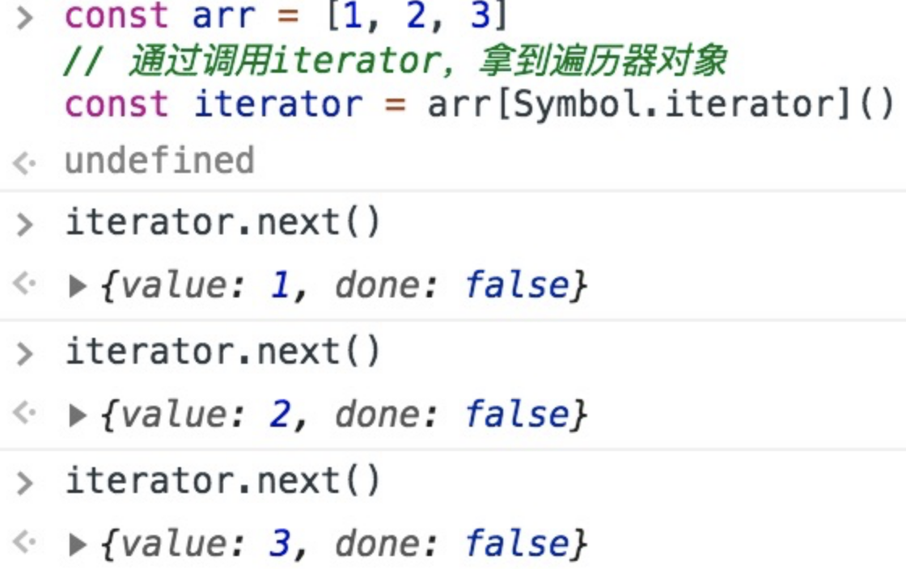
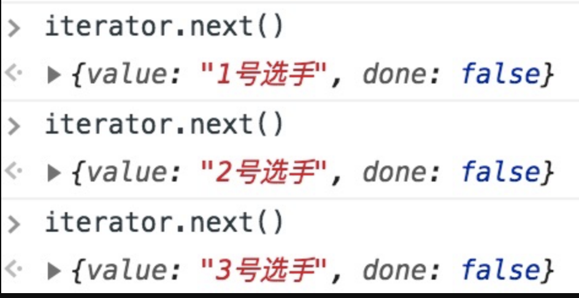
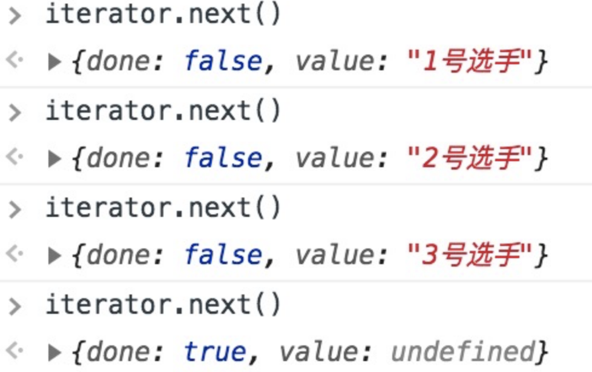
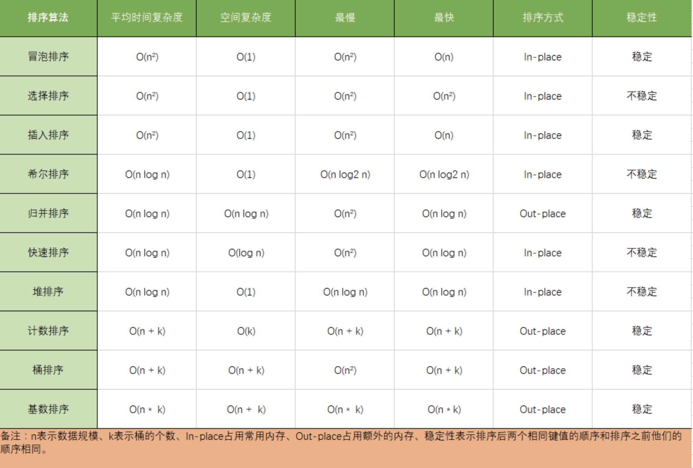

# 高频手写题目
面试高频手写题目
建议优先掌握：
instanceof- 考察对原型链的理解new- 对创建对象实例过程的理解call/apply/bind- 对this指向的理解- 手写promise - 对异步的理解
- 手写原生ajax - 对ajax原理和http请求方式的理解，重点是get和post请求的实现
# 1 实现防抖函数（debounce）
防抖函数原理：在事件被触发n秒后再执行回调，如果在这n秒内又被触发，则重新计时
防抖动和节流本质是不一样的。防抖动是将多次执行变为最后一次执行，节流是将多次执行变成每隔一段时间执行
eg. 像仿百度搜索，就应该用防抖，当我连续不断输入时，不会发送请求；当我一段时间内不输入了，才会发送一次请求；如果小于这段时间继续输入的话，时间会重新计算，也不会发送请求。
手写简化版:
// func是用户传入需要防抖的函数
// wait是等待时间
const debounce = (func, wait = 50) => {
// 缓存一个定时器id
let timer = 0
// 这里返回的函数是每次用户实际调用的防抖函数
// 如果已经设定过定时器了就清空上一次的定时器
// 开始一个新的定时器，延迟执行用户传入的方法
return function(...args) {
if (timer) clearTimeout(timer)
timer = setTimeout(() => {
func.apply(this, args)
}, wait)
}
}
适用场景：
按钮提交场景：防止多次提交按钮，只执行最后提交的一次 服务端验证场景：表单验证需要服务端配合，只执行一段连续的输入事件的最后一次，还有搜索联想词功能类似
# 2 实现节流函数（throttle）
节流函数原理:规定在一个单位时间内，只能触发一次函数。如果这个单位时间内触发多次函数，只有一次生效
例:（连续不断动都需要调用时用，设一时间间隔），像dom的拖拽，如果用消抖的话，就会出现卡顿的感觉，因为只在停止的时候执行了一次，这个时候就应该用节流，在一定时间内多次执行，会流畅很多
手写简版
// func是用户传入需要防抖的函数
// wait是等待时间
const throttle = (func, wait = 50) => {
// 上一次执行该函数的时间
let lastTime = 0
return function(...args) {
// 当前时间
let now = +new Date()
// 将当前时间和上一次执行函数时间对比
// 如果差值大于设置的等待时间就执行函数
if (now - lastTime > wait) {
lastTime = now
func.apply(this, args)
}
}
}
setInterval(
throttle(() => {
console.log(1)
}, 500),
1
)
适用场景：
- 拖拽场景：固定时间内只执行一次，防止超高频次触发位置变动
- 缩放场景：监控浏览器
resize - 动画场景：避免短时间内多次触发动画引起性能问题
# 3 实现一个深拷贝
# 简洁版本
简单版：
const newObj = JSON.parse(JSON.stringify(oldObj));
局限性：
- 他无法实现对函数 、RegExp等特殊对象的克隆
- 会抛弃对象的constructor,所有的构造函数会指向Object
- 对象有循环引用,会报错
面试够用版
function deepClone(obj) {
// 如果是 值类型 或 null，则直接return
if(typeof obj !== 'object' || obj === null) {
return obj
}
// 定义结果对象
let copy = {}
// 如果对象是数组，则定义结果数组
if(obj.constructor === Array) {
copy = []
}
// 遍历对象的key
for(let key in obj) {
// 如果key是对象的自有属性
if(obj.hasOwnProperty(key)) {
// 递归调用深拷贝方法
copy[key] = deepClone(obj[key])
}
}
return copy
}
调用深拷贝方法，若属性为值类型，则直接返回；若属性为引用类型，则递归遍历。这就是我们在解这一类题时的核心的方法。
# 实现完整的深拷贝
1. 简易版及问题
JSON.parse(JSON.stringify());
估计这个api能覆盖大多数的应用场景，没错，谈到深拷贝，我第一个想到的也是它。但是实际上，对于某些严格的场景来说，这个方法是有巨大的坑的。问题如下：
- 无法解决
循环引用的问题。举个例子：
const a = {val:2};
a.target = a;
拷贝
a会出现系统栈溢出，因为出现了无限递归的情况。
- 无法拷贝一些特殊的对象，诸如
RegExp, Date, Set, Map等 - 无法拷贝
函数(划重点)。
因此这个api先pass掉，我们重新写一个深拷贝，简易版如下:
const deepClone = (target) => {
if (typeof target === 'object' && target !== null) {
const cloneTarget = Array.isArray(target) ? []: {};
for (let prop in target) {
if (target.hasOwnProperty(prop)) {
cloneTarget[prop] = deepClone(target[prop]);
}
}
return cloneTarget;
} else {
return target;
}
}
现在，我们以刚刚发现的三个问题为导向，一步步来完善、优化我们的深拷贝代码。
2. 解决循环引用
现在问题如下:
let obj = {val : 100};
obj.target = obj;
deepClone(obj);//报错: RangeError: Maximum call stack size exceeded
这就是循环引用。我们怎么来解决这个问题呢？
创建一个Map。记录下已经拷贝过的对象，如果说已经拷贝过，那直接返回它行了。
const isObject = (target) => (typeof target === 'object' || typeof target === 'function') && target !== null;
const deepClone = (target, map = new Map()) => {
if(map.get(target))
return target;
if (isObject(target)) {
map.set(target, true);
const cloneTarget = Array.isArray(target) ? []: {};
for (let prop in target) {
if (target.hasOwnProperty(prop)) {
cloneTarget[prop] = deepClone(target[prop],map);
}
}
return cloneTarget;
} else {
return target;
}
}
现在来试一试：
const a = {val:2};
a.target = a;
let newA = deepClone(a);
console.log(newA)//{ val: 2, target: { val: 2, target: [Circular] } }
好像是没有问题了, 拷贝也完成了。但还是有一个潜在的坑, 就是map 上的 key 和 map 构成了强引用关系，这是相当危险的。我给你解释一下与之相对的弱引用的概念你就明白了
在计算机程序设计中，弱引用与强引用相对，
被弱引用的对象可以在任何时候被回收，而对于强引用来说，只要这个强引用还在，那么对象无法被回收。拿上面的例子说，map 和 a一直是强引用的关系， 在程序结束之前，a 所占的内存空间一直不会被释放。
怎么解决这个问题？
很简单，让 map 的 key 和 map 构成弱引用即可。ES6给我们提供了这样的数据结构，它的名字叫WeakMap，它是一种特殊的Map, 其中的键是弱引用的。其键必须是对象，而值可以是任意的
稍微改造一下即可:
const deepClone = (target, map = new WeakMap()) => {
//...
}
3. 拷贝特殊对象
可继续遍历
对于特殊的对象，我们使用以下方式来鉴别:
Object.prototype.toString.call(obj);
梳理一下对于可遍历对象会有什么结果：
["object Map"]
["object Set"]
["object Array"]
["object Object"]
["object Arguments"]
以这些不同的字符串为依据，我们就可以成功地鉴别这些对象。
const getType = Object.prototype.toString.call(obj);
const canTraverse = {
'[object Map]': true,
'[object Set]': true,
'[object Array]': true,
'[object Object]': true,
'[object Arguments]': true,
};
const deepClone = (target, map = new Map()) => {
if(!isObject(target))
return target;
let type = getType(target);
let cloneTarget;
if(!canTraverse[type]) {
// 处理不能遍历的对象
return;
}else {
// 这波操作相当关键，可以保证对象的原型不丢失！
let ctor = target.prototype;
cloneTarget = new ctor();
}
if(map.get(target))
return target;
map.put(target, true);
if(type === mapTag) {
//处理Map
target.forEach((item, key) => {
cloneTarget.set(deepClone(key), deepClone(item));
})
}
if(type === setTag) {
//处理Set
target.forEach(item => {
target.add(deepClone(item));
})
}
// 处理数组和对象
for (let prop in target) {
if (target.hasOwnProperty(prop)) {
cloneTarget[prop] = deepClone(target[prop]);
}
}
return cloneTarget;
}
不可遍历的对象
const boolTag = '[object Boolean]';
const numberTag = '[object Number]';
const stringTag = '[object String]';
const dateTag = '[object Date]';
const errorTag = '[object Error]';
const regexpTag = '[object RegExp]';
const funcTag = '[object Function]';
对于不可遍历的对象，不同的对象有不同的处理。
const handleRegExp = (target) => {
const { source, flags } = target;
return new target.constructor(source, flags);
}
const handleFunc = (target) => {
// 待会的重点部分
}
const handleNotTraverse = (target, tag) => {
const Ctor = targe.constructor;
switch(tag) {
case boolTag:
case numberTag:
case stringTag:
case errorTag:
case dateTag:
return new Ctor(target);
case regexpTag:
return handleRegExp(target);
case funcTag:
return handleFunc(target);
default:
return new Ctor(target);
}
}
4. 拷贝函数
- 虽然函数也是对象，但是它过于特殊，我们单独把它拿出来拆解。
- 提到函数，在JS种有两种函数，一种是普通函数，另一种是箭头函数。每个普通函数都是
- Function的实例，而箭头函数不是任何类的实例，每次调用都是不一样的引用。那我们只需要
- 处理普通函数的情况，箭头函数直接返回它本身就好了。
那么如何来区分两者呢？
答案是: 利用原型。箭头函数是不存在原型的。
const handleFunc = (func) => {
// 箭头函数直接返回自身
if(!func.prototype) return func;
const bodyReg = /(?<={)(.|\n)+(?=})/m;
const paramReg = /(?<=\().+(?=\)\s+{)/;
const funcString = func.toString();
// 分别匹配 函数参数 和 函数体
const param = paramReg.exec(funcString);
const body = bodyReg.exec(funcString);
if(!body) return null;
if (param) {
const paramArr = param[0].split(',');
return new Function(...paramArr, body[0]);
} else {
return new Function(body[0]);
}
}
5. 完整代码展示
const getType = obj => Object.prototype.toString.call(obj);
const isObject = (target) => (typeof target === 'object' || typeof target === 'function') && target !== null;
const canTraverse = {
'[object Map]': true,
'[object Set]': true,
'[object Array]': true,
'[object Object]': true,
'[object Arguments]': true,
};
const mapTag = '[object Map]';
const setTag = '[object Set]';
const boolTag = '[object Boolean]';
const numberTag = '[object Number]';
const stringTag = '[object String]';
const symbolTag = '[object Symbol]';
const dateTag = '[object Date]';
const errorTag = '[object Error]';
const regexpTag = '[object RegExp]';
const funcTag = '[object Function]';
const handleRegExp = (target) => {
const { source, flags } = target;
return new target.constructor(source, flags);
}
const handleFunc = (func) => {
// 箭头函数直接返回自身
if(!func.prototype) return func;
const bodyReg = /(?<={)(.|\n)+(?=})/m;
const paramReg = /(?<=\().+(?=\)\s+{)/;
const funcString = func.toString();
// 分别匹配 函数参数 和 函数体
const param = paramReg.exec(funcString);
const body = bodyReg.exec(funcString);
if(!body) return null;
if (param) {
const paramArr = param[0].split(',');
return new Function(...paramArr, body[0]);
} else {
return new Function(body[0]);
}
}
const handleNotTraverse = (target, tag) => {
const Ctor = target.constructor;
switch(tag) {
case boolTag:
return new Object(Boolean.prototype.valueOf.call(target));
case numberTag:
return new Object(Number.prototype.valueOf.call(target));
case stringTag:
return new Object(String.prototype.valueOf.call(target));
case symbolTag:
return new Object(Symbol.prototype.valueOf.call(target));
case errorTag:
case dateTag:
return new Ctor(target);
case regexpTag:
return handleRegExp(target);
case funcTag:
return handleFunc(target);
default:
return new Ctor(target);
}
}
const deepClone = (target, map = new WeakMap()) => {
if(!isObject(target))
return target;
let type = getType(target);
let cloneTarget;
if(!canTraverse[type]) {
// 处理不能遍历的对象
return handleNotTraverse(target, type);
}else {
// 这波操作相当关键，可以保证对象的原型不丢失！
let ctor = target.constructor;
cloneTarget = new ctor();
}
if(map.get(target))
return target;
map.set(target, true);
if(type === mapTag) {
//处理Map
target.forEach((item, key) => {
cloneTarget.set(deepClone(key, map), deepClone(item, map));
})
}
if(type === setTag) {
//处理Set
target.forEach(item => {
cloneTarget.add(deepClone(item, map));
})
}
// 处理数组和对象
for (let prop in target) {
if (target.hasOwnProperty(prop)) {
cloneTarget[prop] = deepClone(target[prop], map);
}
}
return cloneTarget;
}
# 4 实现Event(event bus)
event bus既是node中各个模块的基石，又是前端组件通信的依赖手段之一，同时涉及了订阅-发布设计模式，是非常重要的基础
简单版：
class EventEmeitter {
constructor() {
this._events = this._events || new Map(); // 储存事件/回调键值对
this._maxListeners = this._maxListeners || 10; // 设立监听上限
}
}
// 触发名为type的事件
EventEmeitter.prototype.emit = function(type, ...args) {
let handler;
// 从储存事件键值对的this._events中获取对应事件回调函数
handler = this._events.get(type);
if (args.length > 0) {
handler.apply(this, args);
} else {
handler.call(this);
}
return true;
};
// 监听名为type的事件
EventEmeitter.prototype.addListener = function(type, fn) {
// 将type事件以及对应的fn函数放入this._events中储存
if (!this._events.get(type)) {
this._events.set(type, fn);
}
};
面试版：
class EventEmeitter {
constructor() {
this._events = this._events || new Map(); // 储存事件/回调键值对
this._maxListeners = this._maxListeners || 10; // 设立监听上限
}
}
// 触发名为type的事件
EventEmeitter.prototype.emit = function(type, ...args) {
let handler;
// 从储存事件键值对的this._events中获取对应事件回调函数
handler = this._events.get(type);
if (args.length > 0) {
handler.apply(this, args);
} else {
handler.call(this);
}
return true;
};
// 监听名为type的事件
EventEmeitter.prototype.addListener = function(type, fn) {
// 将type事件以及对应的fn函数放入this._events中储存
if (!this._events.get(type)) {
this._events.set(type, fn);
}
};
// 触发名为type的事件
EventEmeitter.prototype.emit = function(type, ...args) {
let handler;
handler = this._events.get(type);
if (Array.isArray(handler)) {
// 如果是一个数组说明有多个监听者,需要依次此触发里面的函数
for (let i = 0; i < handler.length; i++) {
if (args.length > 0) {
handler[i].apply(this, args);
} else {
handler[i].call(this);
}
}
} else {
// 单个函数的情况我们直接触发即可
if (args.length > 0) {
handler.apply(this, args);
} else {
handler.call(this);
}
}
return true;
};
// 监听名为type的事件
EventEmeitter.prototype.addListener = function(type, fn) {
const handler = this._events.get(type); // 获取对应事件名称的函数清单
if (!handler) {
this._events.set(type, fn);
} else if (handler && typeof handler === "function") {
// 如果handler是函数说明只有一个监听者
this._events.set(type, [handler, fn]); // 多个监听者我们需要用数组储存
} else {
handler.push(fn); // 已经有多个监听者,那么直接往数组里push函数即可
}
};
EventEmeitter.prototype.removeListener = function(type, fn) {
const handler = this._events.get(type); // 获取对应事件名称的函数清单
// 如果是函数,说明只被监听了一次
if (handler && typeof handler === "function") {
this._events.delete(type, fn);
} else {
let postion;
// 如果handler是数组,说明被监听多次要找到对应的函数
for (let i = 0; i < handler.length; i++) {
if (handler[i] === fn) {
postion = i;
} else {
postion = -1;
}
}
// 如果找到匹配的函数,从数组中清除
if (postion !== -1) {
// 找到数组对应的位置,直接清除此回调
handler.splice(postion, 1);
// 如果清除后只有一个函数,那么取消数组,以函数形式保存
if (handler.length === 1) {
this._events.set(type, handler[0]);
}
} else {
return this;
}
}
};
# 5 实现instanceOf
思路：
- 步骤1：先取得当前类的原型，当前实例对象的原型链
- 步骤2：一直循环（执行原型链的查找机制）
- 取得当前实例对象原型链的原型链（
proto = proto.__proto__，沿着原型链一直向上查找） - 如果 当前实例的原型链
__proto__上找到了当前类的原型prototype，则返回true - 如果 一直找到
Object.prototype.__proto__ == null，Object的基类(null)上面都没找到，则返回false
- 取得当前实例对象原型链的原型链（
// 实例.__ptoto__ === 类.prototype
function myInstanceof(example, classFunc) {
let proto = Object.getPrototypeOf(example);
while(true) {
if(proto == null) return false;
// 在当前实例对象的原型链上，找到了当前类
if(proto == classFunc.prototype) return true;
// 沿着原型链__ptoto__一层一层向上查
proto = Object.getPrototypeof(proto); // 等于proto.__ptoto__
}
}
# 6 模拟new
new操作符做了这些事：
- 创建一个全新的对象
- 这个对象的
__proto__要指向构造函数的原型prototype - 执行构造函数，使用
call/apply改变 this 的指向 - 返回值为
object类型则作为new方法的返回值返回，否则返回上述全新对象
function myNew(fn, ...args) {
let instance = Object.create(fn.prototype);
let res = fn.apply(instance, args); // 改变this指向
// 确保返回的是一个对象(万一fn不是构造函数)
return typeof res === 'object' ? res: instance;
}
# 7 实现一个call
call做了什么:
- 将函数设为对象的属性
- 执行&删除这个函数
- 指定
this到函数并传入给定参数执行函数 - 如果不传入参数，默认指向为
window
// 模拟 call bar.mycall(null);
//实现一个call方法：
// 原理：利用 context.xxx = self obj.xx = func-->obj.xx()
Function.prototype.myCall = function(context = window, ...args) {
// this-->func context--> obj args--> 传递过来的参数
// 在context上加一个唯一值不影响context上的属性
let key = Symbol('key')
context[key] = this; // context为调用的上下文,this此处为函数，将这个函数作为context的方法
// let args = [...arguments].slice(1) //第一个参数为obj所以删除,伪数组转为数组
let result = context[key](...args);
delete context[key]; // 不删除会导致context属性越来越多
return result;
};
//用法：f.call(obj,arg1)
function f(a,b){
console.log(a+b)
console.log(this.name)
}
let obj={
name:1
}
f.myCall(obj,1,2) //否则this指向window
# 8 实现apply方法
思路: 利用
this的上下文特性。
Function.prototype.myApply = function(context = window, ...args) {
// this-->func context--> obj args--> 传递过来的参数
// 在context上加一个唯一值不影响context上的属性
let key = Symbol('key')
context[key] = this; // context为调用的上下文,this此处为函数，将这个函数作为context的方法
// let args = [...arguments].slice(1) //第一个参数为obj所以删除,伪数组转为数组
let result = context[key](args); // 这里和call传参不一样
delete context[key]; // 不删除会导致context属性越来越多
return result;
}
// 使用
function f(a,b){
console.log(a,b)
console.log(this.name)
}
let obj={
name:'张三'
}
f.myApply(obj,[1,2]) //arguments[1]
# 9 实现bind
bind 的实现对比其他两个函数略微地复杂了一点，因为 bind 需要返回一个函数，需要判断一些边界问题，以下是 bind 的实现
bind返回了一个函数，对于函数来说有两种方式调用，一种是直接调用，一种是通过new的方式，我们先来说直接调用的方式- 对于直接调用来说，这里选择了 apply 的方式实现，但是对于参数需要注意以下情况：因为
bind可以实现类似这样的代码f.bind(obj, 1)(2)，所以我们需要将两边的参数拼接起来 - 最后来说通过 new 的方式，对于 new 的情况来说，不会被任何方式改变
this，所以对于这种情况我们需要忽略传入的this
简洁版本
Function.prototype.myBind = function (context, ...outerArgs) {
// this->func context->obj outerArgs->[10,20]
let self = this
// 返回一个函数
return function F(...innerArgs) { //返回了一个函数，...innerArgs为实际调用时传入的参数
// 考虑new的方式
if(self instanceof F) {
return new self(...outerArgs, ...innerArgs)
}
// 把func执行，并且改变this即可
return self.apply(context, [...outerArgs, ...innerArgs]) //返回改变了this的函数，参数合并
}
}
// 例子
document.body.addEventListener('click', func.bind(obj, 10, 20))
function func(params) {}
注意： bind之后不能再次修改this的执行，
bind多次后执行，函数this还是指向第一次bind的对象
# 10 模拟Object.create
Object.create()方法创建一个新对象，使用现有的对象来提供新创建的对象的__proto__
// 模拟 Object.create
function create(proto) {
function F() {}
F.prototype = proto;
return new F();
}
# 11 实现类的继承-简版
类的继承在几年前是重点内容，有n种继承方式各有优劣，es6普及后越来越不重要，那么多种写法有点『回字有四样写法』的意思，如果还想深入理解的去看红宝书即可，我们目前只实现一种最理想的继承方式。
function Parent(name) {
this.parent = name
}
Parent.prototype.say = function() {
console.log(`${this.parent}: 你打篮球的样子像kunkun`)
}
function Child(name, parent) {
// 将父类的构造函数绑定在子类上
Parent.call(this, parent)
this.child = name
}
/**
1. 这一步不用Child.prototype =Parent.prototype的原因是怕共享内存，修改父类原型对象就会影响子类
2. 不用Child.prototype = new Parent()的原因是会调用2次父类的构造方法（另一次是call），会存在一份多余的父类实例属性
3. Object.create是创建了父类原型的副本，与父类原型完全隔离
*/
Child.prototype = Object.create(Parent.prototype);
Child.prototype.say = function() {
console.log(`${this.parent}好，我是练习时长两年半的${this.child}`);
}
// 注意记得把子类的构造指向子类本身
Child.prototype.constructor = Child;
var parent = new Parent('father');
parent.say() // father: 你打篮球的样子像kunkun
var child = new Child('cxk', 'father');
child.say() // father好，我是练习时长两年半的cxk
# 12 ES5实现继承的那些事-详细
第一种方式是借助call实现继承
function Parent1(){
this.name = 'parent1';
}
function Child1(){
Parent1.call(this);
this.type = 'child1'
}
console.log(new Child1);
这样写的时候子类虽然能够拿到父类的属性值，但是问题是父类中一旦存在方法那么子类无法继承。那么引出下面的方法
第二种方式借助原型链实现继承：
function Parent2() {
this.name = 'parent2';
this.play = [1, 2, 3]
}
function Child2() {
this.type = 'child2';
}
Child2.prototype = new Parent2();
console.log(new Child2());
看似没有问题，父类的方法和属性都能够访问，但实际上有一个潜在的不足。举个例子：
var s1 = new Child2();
var s2 = new Child2();
s1.play.push(4);
console.log(s1.play, s2.play); // [1,2,3,4] [1,2,3,4]
明明我只改变了s1的play属性，为什么s2也跟着变了呢？很简单，因为两个实例使用的是同一个原型对象
第三种方式：将前两种组合：
function Parent3 () {
this.name = 'parent3';
this.play = [1, 2, 3];
}
function Child3() {
Parent3.call(this);
this.type = 'child3';
}
Child3.prototype = new Parent3();
var s3 = new Child3();
var s4 = new Child3();
s3.play.push(4);
console.log(s3.play, s4.play); // [1,2,3,4] [1,2,3]
之前的问题都得以解决。但是这里又徒增了一个新问题，那就是Parent3的构造函数会多执行了一次（
Child3.prototype = new Parent3();）。这是我们不愿看到的。那么如何解决这个问题？
第四种方式: 组合继承的优化1
function Parent4 () {
this.name = 'parent4';
this.play = [1, 2, 3];
}
function Child4() {
Parent4.call(this);
this.type = 'child4';
}
Child4.prototype = Parent4.prototype;
这里让将父类原型对象直接给到子类，父类构造函数只执行一次，而且父类属性和方法均能访问，但是我们来测试一下
var s3 = new Child4();
var s4 = new Child4();
console.log(s3)
子类实例的构造函数是Parent4，显然这是不对的，应该是Child4。
第五种方式(最推荐使用)：优化2
function Parent5 () {
this.name = 'parent5';
this.play = [1, 2, 3];
}
function Child5() {
Parent5.call(this);
this.type = 'child5';
}
Child5.prototype = Object.create(Parent5.prototype);
Child5.prototype.constructor = Child5;
这是最推荐的一种方式，接近完美的继承。
# 13 实现一个JSON.stringify
JSON.stringify(value[, replacer [, space]])：
Boolean | Number| String类型会自动转换成对应的原始值。undefined、任意函数以及symbol，会被忽略（出现在非数组对象的属性值中时），或者被转换成null（出现在数组中时）。- 不可枚举的属性会被忽略如果一个对象的属性值通过某种间接的方式指回该对象本身，即循环引用，属性也会被忽略
- 如果一个对象的属性值通过某种间接的方式指回该对象本身，即循环引用，属性也会被忽略
function jsonStringify(obj) {
let type = typeof obj;
if (type !== "object") {
if (/string|undefined|function/.test(type)) {
obj = '"' + obj + '"';
}
return String(obj);
} else {
let json = []
let arr = Array.isArray(obj)
for (let k in obj) {
let v = obj[k];
let type = typeof v;
if (/string|undefined|function/.test(type)) {
v = '"' + v + '"';
} else if (type === "object") {
v = jsonStringify(v);
}
json.push((arr ? "" : '"' + k + '":') + String(v));
}
return (arr ? "[" : "{") + String(json) + (arr ? "]" : "}")
}
}
jsonStringify({x : 5}) // "{"x":5}"
jsonStringify([1, "false", false]) // "[1,"false",false]"
jsonStringify({b: undefined}) // "{"b":"undefined"}"
# 14 实现一个JSON.parse
JSON.parse(text[, reviver])
用来解析JSON字符串，构造由字符串描述的JavaScript值或对象。提供可选的reviver函数用以在返回之前对所得到的对象执行变换(操作)
第一种：直接调用 eval
function jsonParse(opt) {
return eval('(' + opt + ')');
}
jsonParse(jsonStringify({x : 5}))
// Object { x: 5}
jsonParse(jsonStringify([1, "false", false]))
// [1, "false", falsr]
jsonParse(jsonStringify({b: undefined}))
// Object { b: "undefined"}
避免在不必要的情况下使用
eval，eval()是一个危险的函数，他执行的代码拥有着执行者的权利。如果你用eval()运行的字符串代码被恶意方（不怀好意的人）操控修改，您最终可能会在您的网页/扩展程序的权限下，在用户计算机上运行恶意代码。它会执行JS代码，有XSS漏洞。
如果你只想记这个方法，就得对参数json做校验。
var rx_one = /^[\],:{}\s]*$/;
var rx_two = /\\(?:["\\\/bfnrt]|u[0-9a-fA-F]{4})/g;
var rx_three = /"[^"\\\n\r]*"|true|false|null|-?\d+(?:\.\d*)?(?:[eE][+\-]?\d+)?/g;
var rx_four = /(?:^|:|,)(?:\s*\[)+/g;
if (
rx_one.test(
json
.replace(rx_two, "@")
.replace(rx_three, "]")
.replace(rx_four, "")
)
) {
var obj = eval("(" +json + ")");
}
第二种：Function
核心：Function与eval有相同的字符串参数特性
var func = new Function(arg1, arg2, ..., functionBody);
在转换JSON的实际应用中，只需要这么做
var jsonStr = '{ "age": 20, "name": "jack" }'
var json = (new Function('return ' + jsonStr))();
eval与Function都有着动态编译js代码的作用，但是在实际的编程中并不推荐使用
# 15 Promise相关
# 1 实现Promise的 resolve
实现 resolve 静态方法有三个要点:
- 传参为一个
Promise, 则直接返回它。 - 传参为一个
thenable对象，返回的Promise会跟随这个对象，采用它的最终状态作为自己的状态。 - 其他情况，直接返回以该值为成功状态的
promise对象。
Promise.resolve = (param) => {
if(param instanceof Promise) return param;
return new Promise((resolve, reject) => {
if(param && param.then && typeof param.then === 'function') {
// param 状态变为成功会调用resolve，将新 Promise 的状态变为成功，反之亦然
param.then(resolve, reject);
}else {
resolve(param);
}
})
}
# 2 实现 Promise.reject
Promise.reject 中传入的参数会作为一个 reason 原封不动地往下传, 实现如下:
Promise.reject = function (reason) {
return new Promise((resolve, reject) => {
reject(reason);
});
}
# 3 实现 Promise.prototype.finally
无论当前 Promise 是成功还是失败，调用finally之后都会执行 finally 中传入的函数，并且将值原封不动的往下传。
Promise.prototype.finally = function(callback) {
this.then(value => {
return Promise.resolve(callback()).then(() => {
return value;
})
}, error => {
return Promise.resolve(callback()).then(() => {
throw error;
})
})
}
# 4 实现 Promise.all
对于 all 方法而言，需要完成下面的核心功能:
- 传入参数为一个空的可迭代对象，则直接进行
resolve。 - 如果参数中有一个
promise失败，那么Promise.all返回的promise对象失败。 - 在任何情况下，
Promise.all返回的promise的完成状态的结果都是一个数组
Promise.all = function(promises) {
return new Promise((resolve, reject) => {
let result = [];
let index = 0;
let len = promises.length;
if(len === 0) {
resolve(result);
return;
}
for(let i = 0; i < len; i++) {
// 为什么不直接 promise[i].then, 因为promise[i]可能不是一个promise
Promise.resolve(promise[i]).then(data => {
result[i] = data;
index++;
if(index === len) resolve(result);
}).catch(err => {
reject(err);
})
}
})
}
# 5 promise.allsettle()
接受的结果与入参时的promise实例一一对应，且结果的每一项都是一个对象，告诉你结果和值，对象内都有一个属性叫“status”，用来明确知道对应的这个promise实例的状态（fulfilled或rejected），fulfilled时，对象有value属性，rejected时有reason属性，对应两种状态的返回值。
const resolved = Promise.resolve(42);
const rejected = Promise.reject(-1);
const allSettledPromise = Promise.allSettled([resolved, rejected]);
allSettledPromise.then(function (results) {
console.log(results);
});
// [
// { status: 'fulfilled', value: 42 },
// { status: 'rejected', reason: -1 }
// ]
重要的一点是，他不论接受入参的promise本身的状态，会返回所有promise的结果，但这一点
Promise.all做不到，如果你需要知道所有入参的异步操作的所有结果，或者需要知道这些异步操作是否全部结束，应该使用promise.allSettled()
实现
function allSettled(iterable) {
return new Promise((resolve, reject) => {
function addElementToResult(i, elem) {
result[i] = elem;
elementCount++;
if (elementCount === result.length) {
resolve(result);
}
}
let index = 0;
for (const promise of iterable) {
// Capture the current value of `index`
const currentIndex = index;
promise.then(
(value) => addElementToResult(
currentIndex, {
status: 'fulfilled',
value
}),
(reason) => addElementToResult(
currentIndex, {
status: 'rejected',
reason
}));
index++;
}
if (index === 0) {
resolve([]);
return;
}
let elementCount = 0;
const result = new Array(index);
});
}
# 6 实现 Promise.race
race 的实现相比之下就简单一些，只要有一个 promise 执行完，直接 resolve 并停止执行
Promise.race = function(promises) {
return new Promise((resolve, reject) => {
let len = promises.length;
if(len === 0) return;
for(let i = 0; i < len; i++) {
Promise.resolve(promise[i]).then(data => {
resolve(data);
return;
}).catch(err => {
reject(err);
return;
})
}
})
}
# 7 实现一个简版Promise
// 使用
var promise = new Promise((resolve,reject) => {
if (操作成功) {
resolve(value)
} else {
reject(error)
}
})
promise.then(function (value) {
// success
},function (value) {
// failure
})
function myPromise(constructor) {
let self = this;
self.status = "pending" // 定义状态改变前的初始状态
self.value = undefined; // 定义状态为resolved的时候的状态
self.reason = undefined; // 定义状态为rejected的时候的状态
function resolve(value) {
if(self.status === "pending") {
self.value = value;
self.status = "resolved";
}
}
function reject(reason) {
if(self.status === "pending") {
self.reason = reason;
self.status = "rejected";
}
}
// 捕获构造异常
try {
constructor(resolve,reject);
} catch(e) {
reject(e);
}
}
// 添加 then 方法
myPromise.prototype.then = function(onFullfilled,onRejected) {
let self = this;
switch(self.status) {
case "resolved":
onFullfilled(self.value);
break;
case "rejected":
onRejected(self.reason);
break;
default:
}
}
var p = new myPromise(function(resolve,reject) {
resolve(1)
});
p.then(function(x) {
console.log(x) // 1
})
使用class实现
class MyPromise {
constructor(fn) {
this.resolvedCallbacks = [];
this.rejectedCallbacks = [];
this.state = 'PENDING';
this.value = '';
fn(this.resolve.bind(this), this.reject.bind(this));
}
resolve(value) {
if (this.state === 'PENDING') {
this.state = 'RESOLVED';
this.value = value;
this.resolvedCallbacks.map(cb => cb(value));
}
}
reject(value) {
if (this.state === 'PENDING') {
this.state = 'REJECTED';
this.value = value;
this.rejectedCallbacks.map(cb => cb(value));
}
}
then(onFulfilled, onRejected) {
if (this.state === 'PENDING') {
this.resolvedCallbacks.push(onFulfilled);
this.rejectedCallbacks.push(onRejected);
}
if (this.state === 'RESOLVED') {
onFulfilled(this.value);
}
if (this.state === 'REJECTED') {
onRejected(this.value);
}
}
}
# 8 Promise 实现-详细
- 可以把
Promise看成一个状态机。初始是pending状态，可以通过函数resolve和reject，将状态转变为resolved或者rejected状态，状态一旦改变就不能再次变化。 then函数会返回一个Promise实例，并且该返回值是一个新的实例而不是之前的实例。因为Promise规范规定除了pending状态，其他状态是不可以改变的，如果返回的是一个相同实例的话，多个then调用就失去意义了。- 对于
then来说，本质上可以把它看成是flatMap
// 三种状态
const PENDING = "pending";
const RESOLVED = "resolved";
const REJECTED = "rejected";
// promise 接收一个函数参数，该函数会立即执行
function MyPromise(fn) {
let _this = this;
_this.currentState = PENDING;
_this.value = undefined;
// 用于保存 then 中的回调，只有当 promise
// 状态为 pending 时才会缓存，并且每个实例至多缓存一个
_this.resolvedCallbacks = [];
_this.rejectedCallbacks = [];
_this.resolve = function (value) {
if (value instanceof MyPromise) {
// 如果 value 是个 Promise，递归执行
return value.then(_this.resolve, _this.reject)
}
setTimeout(() => { // 异步执行，保证执行顺序
if (_this.currentState === PENDING) {
_this.currentState = RESOLVED;
_this.value = value;
_this.resolvedCallbacks.forEach(cb => cb());
}
})
};
_this.reject = function (reason) {
setTimeout(() => { // 异步执行，保证执行顺序
if (_this.currentState === PENDING) {
_this.currentState = REJECTED;
_this.value = reason;
_this.rejectedCallbacks.forEach(cb => cb());
}
})
}
// 用于解决以下问题
// new Promise(() => throw Error('error))
try {
fn(_this.resolve, _this.reject);
} catch (e) {
_this.reject(e);
}
}
MyPromise.prototype.then = function (onResolved, onRejected) {
var self = this;
// 规范 2.2.7，then 必须返回一个新的 promise
var promise2;
// 规范 2.2.onResolved 和 onRejected 都为可选参数
// 如果类型不是函数需要忽略，同时也实现了透传
// Promise.resolve(4).then().then((value) => console.log(value))
onResolved = typeof onResolved === 'function' ? onResolved : v => v;
onRejected = typeof onRejected === 'function' ? onRejected : r => throw r;
if (self.currentState === RESOLVED) {
return (promise2 = new MyPromise(function (resolve, reject) {
// 规范 2.2.4，保证 onFulfilled，onRjected 异步执行
// 所以用了 setTimeout 包裹下
setTimeout(function () {
try {
var x = onResolved(self.value);
resolutionProcedure(promise2, x, resolve, reject);
} catch (reason) {
reject(reason);
}
});
}));
}
if (self.currentState === REJECTED) {
return (promise2 = new MyPromise(function (resolve, reject) {
setTimeout(function () {
// 异步执行onRejected
try {
var x = onRejected(self.value);
resolutionProcedure(promise2, x, resolve, reject);
} catch (reason) {
reject(reason);
}
});
}));
}
if (self.currentState === PENDING) {
return (promise2 = new MyPromise(function (resolve, reject) {
self.resolvedCallbacks.push(function () {
// 考虑到可能会有报错，所以使用 try/catch 包裹
try {
var x = onResolved(self.value);
resolutionProcedure(promise2, x, resolve, reject);
} catch (r) {
reject(r);
}
});
self.rejectedCallbacks.push(function () {
try {
var x = onRejected(self.value);
resolutionProcedure(promise2, x, resolve, reject);
} catch (r) {
reject(r);
}
});
}));
}
};
// 规范 2.3
function resolutionProcedure(promise2, x, resolve, reject) {
// 规范 2.3.1，x 不能和 promise2 相同，避免循环引用
if (promise2 === x) {
return reject(new TypeError("Error"));
}
// 规范 2.3.2
// 如果 x 为 Promise，状态为 pending 需要继续等待否则执行
if (x instanceof MyPromise) {
if (x.currentState === PENDING) {
x.then(function (value) {
// 再次调用该函数是为了确认 x resolve 的
// 参数是什么类型，如果是基本类型就再次 resolve
// 把值传给下个 then
resolutionProcedure(promise2, value, resolve, reject);
}, reject);
} else {
x.then(resolve, reject);
}
return;
}
// 规范 2.3.3.3.3
// reject 或者 resolve 其中一个执行过得话，忽略其他的
let called = false;
// 规范 2.3.3，判断 x 是否为对象或者函数
if (x !== null && (typeof x === "object" || typeof x === "function")) {
// 规范 2.3.3.2，如果不能取出 then，就 reject
try {
// 规范 2.3.3.1
let then = x.then;
// 如果 then 是函数，调用 x.then
if (typeof then === "function") {
// 规范 2.3.3.3
then.call(
x,
y => {
if (called) return;
called = true;
// 规范 2.3.3.3.1
resolutionProcedure(promise2, y, resolve, reject);
},
e => {
if (called) return;
called = true;
reject(e);
}
);
} else {
// 规范 2.3.3.4
resolve(x);
}
} catch (e) {
if (called) return;
called = true;
reject(e);
}
} else {
// 规范 2.3.4，x 为基本类型
resolve(x);
}
}
# 16 解析 URL Params 为对象
let url = 'http://www.domain.com/?user=anonymous&id=123&id=456&city=%E5%8C%97%E4%BA%AC&enabled';
parseParam(url)
/* 结果
{ user: 'anonymous',
id: [ 123, 456 ], // 重复出现的 key 要组装成数组，能被转成数字的就转成数字类型
city: '北京', // 中文需解码
enabled: true, // 未指定值得 key 约定为 true
}
*/
function parseParam(url) {
const paramsStr = /.+\?(.+)$/.exec(url)[1]; // 将 ? 后面的字符串取出来
const paramsArr = paramsStr.split('&'); // 将字符串以 & 分割后存到数组中
let paramsObj = {};
// 将 params 存到对象中
paramsArr.forEach(param => {
if (/=/.test(param)) { // 处理有 value 的参数
let [key, val] = param.split('='); // 分割 key 和 value
val = decodeURIComponent(val); // 解码
val = /^\d+$/.test(val) ? parseFloat(val) : val; // 判断是否转为数字
if (paramsObj.hasOwnProperty(key)) { // 如果对象有 key，则添加一个值
paramsObj[key] = [].concat(paramsObj[key], val);
} else { // 如果对象没有这个 key，创建 key 并设置值
paramsObj[key] = val;
}
} else { // 处理没有 value 的参数
paramsObj[param] = true;
}
})
return paramsObj;
}
# 17 模板引擎实现
let template = '我是{{name}}，年龄{{age}}，性别{{sex}}';
let data = {
name: '姓名',
age: 18
}
render(template, data); // 我是姓名，年龄18，性别undefined
function render(template, data) {
const reg = /\{\{(\w+)\}\}/; // 模板字符串正则
if (reg.test(template)) { // 判断模板里是否有模板字符串
const name = reg.exec(template)[1]; // 查找当前模板里第一个模板字符串的字段
template = template.replace(reg, data[name]); // 将第一个模板字符串渲染
return render(template, data); // 递归的渲染并返回渲染后的结构
}
return template; // 如果模板没有模板字符串直接返回
}
# 18 转化为驼峰命名
var s1 = "get-element-by-id"
// 转化为 getElementById
var f = function(s) {
return s.replace(/-\w/g, function(x) {
return x.slice(1).toUpperCase();
})
}
# 19 查找字符串中出现最多的字符和个数
例: abbcccddddd -> 字符最多的是d，出现了5次
let str = "abcabcabcbbccccc";
let num = 0;
let char = '';
// 使其按照一定的次序排列
str = str.split('').sort().join('');
// "aaabbbbbcccccccc"
// 定义正则表达式
let re = /(\w)\1+/g;
str.replace(re,($0,$1) => {
if(num < $0.length){
num = $0.length;
char = $1;
}
});
console.log(`字符最多的是${char}，出现了${num}次`);
# 20 字符串查找
请使用最基本的遍历来实现判断字符串 a 是否被包含在字符串 b 中，并返回第一次出现的位置（找不到返回 -1）。
a='34';b='1234567'; // 返回 2
a='35';b='1234567'; // 返回 -1
a='355';b='12354355'; // 返回 5
isContain(a,b);
function isContain(a, b) {
for (let i in b) {
if (a[0] === b[i]) {
let tmp = true;
for (let j in a) {
if (a[j] !== b[~~i + ~~j]) {
tmp = false;
}
}
if (tmp) {
return i;
}
}
}
return -1;
}
# 21 实现千位分隔符
// 保留三位小数
parseToMoney(1234.56); // return '1,234.56'
parseToMoney(123456789); // return '123,456,789'
parseToMoney(1087654.321); // return '1,087,654.321'
function parseToMoney(num) {
num = parseFloat(num.toFixed(3));
let [integer, decimal] = String.prototype.split.call(num, '.');
integer = integer.replace(/\d(?=(\d{3})+$)/g, '$&,');
return integer + '.' + (decimal ? decimal : '');
}
# 22 判断是否是电话号码
function isPhone(tel) {
var regx = /^1[34578]\d{9}$/;
return regx.test(tel);
}
# 23 验证是否是邮箱
function isEmail(email) {
var regx = /^([a-zA-Z0-9_\-])+@([a-zA-Z0-9_\-])+(\.[a-zA-Z0-9_\-])+$/;
return regx.test(email);
}
# 24 验证是否是身份证
function isCardNo(number) {
var regx = /(^\d{15}$)|(^\d{18}$)|(^\d{17}(\d|X|x)$)/;
return regx.test(number);
}
# 25 用ES5实现数组的map方法
- 回调函数的参数有哪些，返回值如何处理
- 不修改原来的数组
Array.prototype.MyMap = function(fn, context){
// 转换类数组
var arr = Array.prototype.slice.call(this);//由于是ES5所以就不用...展开符了
var mappedArr = [];
for (var i = 0; i < arr.length; i++ ){
// 把当前值、索引、当前数组返回去。调用的时候传到函数参数中 [1,2,3,4].map((curr,index,arr))
mappedArr.push(fn.call(context, arr[i], i, this));
}
return mappedArr;
}
# 26 用ES5实现数组的reduce方法
- 初始值不传怎么处理
- 回调函数的参数有哪些，返回值如何处理。
Array.prototype.myReduce = function(fn, initialValue) {
var arr = Array.prototype.slice.call(this);
var res, startIndex;
res = initialValue ? initialValue : arr[0]; // 不传默认取数组第一项
startIndex = initialValue ? 0 : 1;
for(var i = startIndex; i < arr.length; i++) {
// 把初始值、当前值、索引、当前数组返回去。调用的时候传到函数参数中 [1,2,3,4].reduce((initVal,curr,index,arr))
res = fn.call(null, res, arr[i], i, this);
}
return res;
}
- 对于普通函数，绑定this指向
- 对于构造函数，要保证原函数的原型对象上的属性不能丢失
Function.prototype.bind = function(context, ...args) {
let self = this;//谨记this表示调用bind的函数
let fBound = function() {
//this instanceof fBound为true表示构造函数的情况。如new func.bind(obj)
return self.apply(this instanceof fBound ? this : context || window, args.concat(Array.prototype.slice.call(arguments)));
}
fBound.prototype = Object.create(this.prototype);//保证原函数的原型对象上的属性不丢失
return fBound;
}
大家平时说的手写bind，其实就这么简单
# 27 实现单例模式
核心要点: 用闭包和Proxy属性拦截
function proxy(func) {
let instance;
let handler = {
constructor(target, args) {
if(!instance) {
instance = Reflect.constructor(fun, args);
}
return instance;
}
}
return new Proxy(func, handler);
}
# 28 实现数组的flat
需求:多维数组=>一维数组
let ary = [1, [2, [3, [4, 5]]], 6];
let str = JSON.stringify(ary);
//第0种处理:直接的调用
arr_flat = arr.flat(Infinity);
//第一种处理
ary = str.replace(/(\[|\])/g, '').split(',');
//第二种处理
str = str.replace(/(\[\]))/g, '');
str = '[' + str + ']';
ary = JSON.parse(str);
//第三种处理：递归处理
let result = [];
let fn = function(ary) {
for(let i = 0; i < ary.length; i++) }{
let item = ary[i];
if (Array.isArray(ary[i])){
fn(item);
} else {
result.push(item);
}
}
}
//第四种处理：用 reduce 实现数组的 flat 方法
function flatten(ary) {
return ary.reduce((pre, cur) => {
return pre.concat(Array.isArray(cur) ? flatten(cur) : cur);
}, []);
}
let ary = [1, 2, [3, 4], [5, [6, 7]]]
console.log(flatten(ary))
//第五种处理：扩展运算符
while (ary.some(Array.isArray)) {
ary = [].concat(...ary);
}
对象扁平化
function objectFlat(obj = {}) {
const res = {}
function flat(item, preKey = '') {
Object.entries(item).forEach(([key, val]) => {
const newKey = preKey ? `${preKey}.${key}` : key
if (val && typeof val === 'object') {
flat(val, newKey)
} else {
res[newKey] = val
}
})
}
flat(obj)
return res
}
// 测试
const source = { a: { b: { c: 1, d: 2 }, e: 3 }, f: { g: 2 } }
console.log(objectFlat(source));
# 29 请实现一个 add 函数，满足以下功能
add(1); // 1
add(1)(2); // 3
add(1)(2)(3)；// 6
add(1)(2, 3); // 6
add(1, 2)(3); // 6
add(1, 2, 3); // 6
function add() {
let args = [].slice.call(arguments);
let fn = function(){
let fn_args = [].slice.call(arguments)
return add.apply(null,args.concat(fn_args))
}
fn.toString = function(){
return args.reduce((a,b)=>a+b)
}
return fn
}
# 30 实现一个 sleep 函数，比如 sleep(1000) 意味着等待1000毫秒
const sleep = (time) => {
return new Promise(resolve => setTimeout(resolve, time))
}
sleep(1000).then(() => {
// 这里写你的骚操作
})
# 31 实现 (5).add(3).minus(2) 功能
例： 5 + 3 - 2，结果为 6
Number.prototype.add = function(n) {
return this.valueOf() + n;
};
Number.prototype.minus = function(n) {
return this.valueOf() - n;
};
# 32 给定两个数组，写一个方法来计算它们的交集
例如：给定 nums1 = [1, 2, 2, 1]，nums2 = [2, 2]，返回 [2, 2]。
function union (arr1, arr2) {
return arr1.filter(item => {
return arr2.indexOf(item) > - 1;
})
}
const a = [1, 2, 2, 1];
const b = [2, 3, 2];
console.log(union(a, b)); // [2, 2]
# 33 实现一个JS函数柯里化
柯里化的定义：接收一部分参数，返回一个函数接收剩余参数，接收足够参数后，执行原函数。
当柯里化函数接收到足够参数后，就会执行原函数，如何去确定何时达到足够的参数呢？
有两种思路：
- 通过函数的
length属性，获取函数的形参个数，形参的个数就是所需的参数个数 - 在调用柯里化工具函数时，手动指定所需的参数个数
将这两点结合一下，实现一个简单 curry 函数
通用版
function curry(fn, args) {
var length = fn.length;
var args = args || [];
return function(){
newArgs = args.concat(Array.prototype.slice.call(arguments));
if (newArgs.length < length) {
return curry.call(this,fn,newArgs);
}else{
return fn.apply(this,newArgs);
}
}
}
function multiFn(a, b, c) {
return a * b * c;
}
var multi = curry(multiFn);
multi(2)(3)(4);
multi(2,3,4);
multi(2)(3,4);
multi(2,3)(4)
ES6写法
const curry = (fn, arr = []) => (...args) => (
arg => arg.length === fn.length
? fn(...arg)
: curry(fn, arg)
)([...arr, ...args])
let curryTest=curry((a,b,c,d)=>a+b+c+d)
curryTest(1,2,3)(4) //返回10
curryTest(1,2)(4)(3) //返回10
curryTest(1,2)(3,4) //返回10
# 34 实现一个双向绑定
defineProperty 版本
// 数据
const data = {
text: 'default'
};
const input = document.getElementById('input');
const span = document.getElementById('span');
// 数据劫持
Object.defineProperty(data, 'text', {
// 数据变化 --> 修改视图
set(newVal) {
input.value = newVal;
span.innerHTML = newVal;
}
});
// 视图更改 --> 数据变化
input.addEventListener('keyup', function(e) {
data.text = e.target.value;
});
proxy 版本
// 数据
const data = {
text: 'default'
};
const input = document.getElementById('input');
const span = document.getElementById('span');
// 数据劫持
const handler = {
set(target, key, value) {
target[key] = value;
// 数据变化 --> 修改视图
input.value = value;
span.innerHTML = value;
return value;
}
};
const proxy = new Proxy(data, handler);
// 视图更改 --> 数据变化
input.addEventListener('keyup', function(e) {
proxy.text = e.target.value;
});
# 35 Array.isArray 实现
Array.myIsArray = function(o) {
return Object.prototype.toString.call(Object(o)) === '[object Array]';
};
console.log(Array.myIsArray([])); // true
# 36 对象数组如何去重
根据每个对象的某一个具体属性来进行去重
const responseList = [
{ id: 1, a: 1 },
{ id: 2, a: 2 },
{ id: 3, a: 3 },
{ id: 1, a: 4 },
];
const result = responseList.reduce((acc, cur) => {
const ids = acc.map(item => item.id);
return ids.includes(cur.id) ? acc : [...acc, cur];
}, []);
console.log(result); // -> [ { id: 1, a: 1}, {id: 2, a: 2}, {id: 3, a: 3} ]
# 37 实现一个函数判断数据类型
function getType(obj) {
if (obj === null) return String(obj);
return typeof obj === 'object'
? Object.prototype.toString.call(obj).replace('[object ', '').replace(']', '').toLowerCase()
: typeof obj;
}
// 调用
getType(null); // -> null
getType(undefined); // -> undefined
getType({}); // -> object
getType([]); // -> array
getType(123); // -> number
getType(true); // -> boolean
getType('123'); // -> string
getType(/123/); // -> regexp
getType(new Date()); // -> date
# 38 查找字符串中出现最多的字符和个数
// 例: abbcccddddd -> 字符最多的是d，出现了5次
let str = "abcabcabcbbccccc";
let num = 0;
let char = '';
// 使其按照一定的次序排列
str = str.split('').sort().join('');
// "aaabbbbbcccccccc"
// 定义正则表达式
let re = /(\w)\1+/g;
str.replace(re,($0,$1) => {
if(num < $0.length){
num = $0.length;
char = $1;
}
});
console.log(`字符最多的是${char}，出现了${num}次`);
# 39 数组去重问题
首先:我知道多少种去重方式
# 双层 for 循环
function distinct(arr) {
for (let i=0, len=arr.length; i<len; i++) {
for (let j=i+1; j<len; j++) {
if (arr[i] == arr[j]) {
arr.splice(j, 1);
// splice 会改变数组长度，所以要将数组长度 len 和下标 j 减一
len--;
j--;
}
}
}
return arr;
}
思想: 双重
for循环是比较笨拙的方法，它实现的原理很简单：先定义一个包含原始数组第一个元素的数组，然后遍历原始数组，将原始数组中的每个元素与新数组中的每个元素进行比对，如果不重复则添加到新数组中，最后返回新数组；因为它的时间复杂度是O(n^2)，如果数组长度很大，效率会很低
# Array.filter() 加 indexOf/includes
function distinct(a, b) {
let arr = a.concat(b);
return arr.filter((item, index)=> {
//return arr.indexOf(item) === index
return arr.includes(item)
})
}
思想: 利用
indexOf检测元素在数组中第一次出现的位置是否和元素现在的位置相等，如果不等则说明该元素是重复元素
# ES6 中的 Set 去重
function distinct(array) {
return Array.from(new Set(array));
}
思想: ES6 提供了新的数据结构 Set，Set 结构的一个特性就是成员值都是唯一的，没有重复的值。
# reduce 实现对象数组去重复
var resources = [
{ name: "张三", age: "18" },
{ name: "张三", age: "19" },
{ name: "张三", age: "20" },
{ name: "李四", age: "19" },
{ name: "王五", age: "20" },
{ name: "赵六", age: "21" }
]
var temp = {};
resources = resources.reduce((prev, curv) => {
// 如果临时对象中有这个名字，什么都不做
if (temp[curv.name]) {
}else {
// 如果临时对象没有就把这个名字加进去，同时把当前的这个对象加入到prev中
temp[curv.name] = true;
prev.push(curv);
}
return prev
}, []);
console.log("结果", resources);
这种方法是利用高阶函数
reduce进行去重， 这里只需要注意initialValue得放一个空数组[]，不然没法push
# 40 基于Generator函数实现async/await原理
核心：传递给我一个
Generator函数，把函数中的内容基于Iterator迭代器的特点一步步的执行
function readFile(file) {
return new Promise(resolve => {
setTimeout(() => {
resolve(file);
}, 1000);
})
};
function asyncFunc(generator) {
const iterator = generator(); // 接下来要执行next
// data为第一次执行之后的返回结果，用于传给第二次执行
const next = (data) => {
let { value, done } = iterator.next(data); // 第二次执行，并接收第一次的请求结果 data
if (done) return; // 执行完毕(到第三次)直接返回
// 第一次执行next时，yield返回的 promise实例 赋值给了 value
value.then(data => {
next(data); // 当第一次value 执行完毕且成功时，执行下一步(并把第一次的结果传递下一步)
});
}
next();
};
asyncFunc(function* () {
// 生成器函数：控制代码一步步执行
let data = yield readFile('a.js'); // 等这一步骤执行执行成功之后，再往下走，没执行完的时候，直接返回
data = yield readFile(data + 'b.js');
return data;
})
# 41 基于Promise封装Ajax
- 返回一个新的Promise实例
- 创建HMLHttpRequest异步对象
- 调用open方法，打开url，与服务器建立链接（发送前的一些处理）
- 监听Ajax状态信息
- 如果
xhr.readyState == 4（表示服务器响应完成，可以获取使用服务器的响应了）xhr.status == 200，返回resolve状态xhr.status == 404，返回reject状态
xhr.readyState !== 4，把请求主体的信息基于send发送给服务器
function ajax(url, method) {
return new Promise((resolve, reject) => {
const xhr = new XMLHttpRequest()
xhr.open(url, method, true)
xhr.onreadystatechange = function () {
if (xhr.readyState === 4) {
if (xhr.status === 200) {
resolve(xhr.responseText)
} else if (xhr.status === 404) {
reject(new Error('404'))
}
} else {
reject('请求数据失败')
}
}
xhr.send(null)
})
}
# 42 手动实现JSONP跨域
利用
<script>标签不受跨域限制的特点，缺点是只能支持get请求
- 创建
script标签 - 设置
script标签的src属性，以问号传递参数，设置好回调函数callback名称 - 插入到
html文本中 - 调用回调函数，
res参数就是获取的数据
function jsonp(url, jsonpCallback, success) {
const script = document.createElement('script')
script.src = url
script.async = true
script.type = 'text/javascript'
window[jsonpCallback] = function(data) {
success && success(data)
}
document.body.appendChild(script)
}
- 设置
CORS: Access-Control-Allow-Origin：* postMessage
# 43 手动实现发布订阅
发布订阅的核心:： 每次
event. emit（发布），就会触发一次event.on（注册）
class EventEmitter {
constructor() {
// 事件对象，存放订阅的名字和事件
this.events = {};
}
// 订阅事件的方法
on(eventName,callback) {
if (!this.events[eventName]) {
// 注意数据，一个名字可以订阅多个事件函数
this.events[eventName] = [callback];
} else {
// 存在则push到指定数组的尾部保存
this.events[eventName].push(callback)
}
}
// 触发事件的方法
emit(eventName) {
// 遍历执行所有订阅的事件
this.events[eventName] && this.events[eventName].forEach(cb => cb());
}
}
测试用例
let em = new EventEmitter();
function workDay() {
console.log("每天工作");
}
function makeMoney() {
console.log("赚100万");
}
function sayLove() {
console.log("向喜欢的人示爱");
}
em.on("money",makeMoney);
em.on("love",sayLove);
em.on("work", workDay);
em.emit("money");
em.emit("love");
em.emit("work");
# 44 手动实现观察者模式
观察者模式（基于发布订阅模式） 有观察者，也有被观察者
观察者需要放到被观察者中，被观察者的状态变化需要通知观察者 我变化了 内部也是基于发布订阅模式，收集观察者，状态变化后要主动通知观察者
class Subject { // 被观察者 学生
constructor(name) {
this.state = '开心的'
this.observers = []; // 存储所有的观察者
}
// 收集所有的观察者
attach(o){ // Subject. prototype. attch
this.observers.push(o)
}
// 更新被观察者 状态的方法
setState(newState) {
this.state = newState; // 更新状态
// this 指被观察者 学生
this.observers.forEach(o => o.update(this)) // 通知观察者 更新它们的状态
}
}
class Observer{ // 观察者 父母和老师
constructor(name) {
this.name = name
}
update(student) {
console.log('当前' + this.name + '被通知了', '当前学生的状态是' + student.state)
}
}
let student = new Subject('学生');
let parent = new Observer('父母');
let teacher = new Observer('老师');
// 被观察者存储观察者的前提，需要先接纳观察者
student. attach(parent);
student. attach(teacher);
student. setState('被欺负了');
# 45 手动实现Object.freeze
Object.freeze冻结一个对象，让其不能再添加/删除属性，也不能修改该对象已有属性的可枚举性、可配置可写性，也不能修改已有属性的值和它的原型属性，最后返回一个和传入参数相同的对象
function myFreeze(obj){
// 判断参数是否为Object类型，如果是就封闭对象，循环遍历对象。去掉原型属性，将其writable特性设置为false
if(obj instanceof Object){
Object.seal(obj); // 封闭对象
for(let key in obj){
if(obj.hasOwnProperty(key)){
Object.defineProperty(obj,key,{
writable:false // 设置只读
})
// 如果属性值依然为对象，要通过递归来进行进一步的冻结
myFreeze(obj[key]);
}
}
}
}
# 46 手动实现Promise.all
Promise.all：有一个promise任务失败就全部失败Promise.all方法返回的是一个promise
function isPromise (val) {
return typeof val.then === 'function'; // (123).then => undefined
}
Promise.all = function(promises) {
return new Promise((resolve, reject) => {
let arr = []; // 存放 promise执行后的结果
let index = 0; // 计数器，用来累计promise的已执行次数
const processData = (key, data) => {
arr[key] = data; // 不能使用数组的长度来计算
/*
if (arr.length == promises.length) {
resolve(arr); // [null, null , 1, 2] 由于Promise异步比较慢，所以还未返回
}
*/
if (++index === promises.length) {
// 必须保证数组里的每一个
resolve(arr);
}
}
// 遍历数组依次拿到执行结果
for (let i = 0; i < promises.length; i++) {
let result = promises[i];
if(isPromise(result)) {
// 让里面的promise执行，取得成功后的结果
// data promise执行后的返回结果
result.then((data) => {
// 处理数据，按照原数组的顺序依次输出
processData(i ,data)
}, reject) // reject本事就是个函数 所以简写了
} else {
// 1 , 2
processData(i ,result)
}
}
})
}
测试用例
let fs = require('fs').promises;
let getName = fs.readFile('./name.txt', 'utf8');
let getAge = fs.readFile('./age.txt', 'utf8');
Promise.all([1, getName, getAge, 2]).then(data => {
console.log(data); // [ 1, 'name', '11', 2 ]
})
# 47 手动实现Promise.allSettled
MDN:
Promise.allSettled()方法返回一个在所有给定的promise都已经fulfilled或rejected后的promise，并带有一个对象数组，每个对象表示对应的promise`结果
当您有多个彼此不依赖的异步任务成功完成时，或者您总是想知道每个promise的结果时，通常使用它。
【译】
Promise.allSettled跟Promise.all类似, 其参数接受一个Promise的数组, 返回一个新的Promise, 唯一的不同在于, 其不会进行短路, 也就是说当Promise全部处理完成后我们可以拿到每个Promise的状态, 而不管其是否处理成功。
用法 | 测试用例
let fs = require('fs').promises;
let getName = fs.readFile('./name.txt', 'utf8'); // 读取文件成功
let getAge = fs.readFile('./age.txt', 'utf8');
Promise.allSettled([1, getName, getAge, 2]).then(data => {
console.log(data);
});
// 输出结果
/*
[
{ status: 'fulfilled', value: 1 },
{ status: 'fulfilled', value: 'zf' },
{ status: 'fulfilled', value: '11' },
{ status: 'fulfilled', value: 2 }
]
*/
let getName = fs.readFile('./name123.txt', 'utf8'); // 读取文件失败
let getAge = fs.readFile('./age.txt', 'utf8');
// 输出结果
/*
[
{ status: 'fulfilled', value: 1 },
{
status: 'rejected',
value: [Error: ENOENT: no such file or directory, open './name123.txt'] {
errno: -2,
code: 'ENOENT',
syscall: 'open',
path: './name123.txt'
}
},
{ status: 'fulfilled', value: '11' },
{ status: 'fulfilled', value: 2 }
]
*/
实现
function isPromise (val) {
return typeof val.then === 'function'; // (123).then => undefined
}
Promise.allSettled = function(promises) {
return new Promise((resolve, reject) => {
let arr = [];
let times = 0;
const setData = (index, data) => {
arr[index] = data;
if (++times === promises.length) {
resolve(arr);
}
console.log('times', times)
}
for (let i = 0; i < promises.length; i++) {
let current = promises[i];
if (isPromise(current)) {
current.then((data) => {
setData(i, { status: 'fulfilled', value: data });
}, err => {
setData(i, { status: 'rejected', value: err })
})
} else {
setData(i, { status: 'fulfilled', value: current })
}
}
})
}
# 48 手动实现Promise.prototype.finally
前面的
promise不管成功还是失败，都会走到finally中，并且finally之后，还可以继续then（说明它还是一个then方法是关键），并且会将初始的promise值原封不动的传递给后面的then.
Promise.prototype.finally最大的作用
finally里的函数，无论如何都会执行，并会把前面的值原封不动传递给下一个then方法中- 如果
finally函数中有promise等异步任务，会等它们全部执行完毕，再结合之前的成功与否状态，返回值
Promise.prototype.finally六大情况用法
// 情况1
Promise.resolve(123).finally((data) => { // 这里传入的函数，无论如何都会执行
console.log(data); // undefined
})
// 情况2 (这里，finally方法相当于做了中间处理，起一个过渡的作用)
Promise.resolve(123).finally((data) => {
console.log(data); // undefined
}).then(data => {
console.log(data); // 123
})
// 情况3 (这里只要reject，都会走到下一个then的err中)
Promise.reject(123).finally((data) => {
console.log(data); // undefined
}).then(data => {
console.log(data);
}, err => {
console.log(err, 'err'); // 123 err
})
// 情况4 (一开始就成功之后，会等待finally里的promise执行完毕后，再把前面的data传递到下一个then中)
Promise.resolve(123).finally((data) => {
console.log(data); // undefined
return new Promise((resolve, reject) => {
setTimeout(() => {
resolve('ok');
}, 3000)
})
}).then(data => {
console.log(data, 'success'); // 123 success
}, err => {
console.log(err, 'err');
})
// 情况5 (虽然一开始成功，但是只要finally函数中的promise失败了，就会把其失败的值传递到下一个then的err中)
Promise.resolve(123).finally((data) => {
console.log(data); // undefined
return new Promise((resolve, reject) => {
setTimeout(() => {
reject('rejected');
}, 3000)
})
}).then(data => {
console.log(data, 'success');
}, err => {
console.log(err, 'err'); // rejected err
})
// 情况6 (虽然一开始失败，但是也要等finally中的promise执行完，才能把一开始的err传递到err的回调中)
Promise.reject(123).finally((data) => {
console.log(data); // undefined
return new Promise((resolve, reject) => {
setTimeout(() => {
resolve('resolve');
}, 3000)
})
}).then(data => {
console.log(data, 'success');
}, err => {
console.log(err, 'err'); // 123 err
})
源码实现
Promise.prototype.finally = function (callback) {
return this.then((data) => {
// 让函数执行 内部会调用方法，如果方法是promise，需要等待它完成
// 如果当前promise执行时失败了，会把err传递到，err的回调函数中
return Promise.resolve(callback()).then(() => data); // data 上一个promise的成功态
}, err => {
return Promise.resolve(callback()).then(() => {
throw err; // 把之前的失败的err，抛出去
});
})
}
# 49 异步并发数限制
/**
* 关键点
* 1. new promise 一经创建，立即执行
* 2. 使用 Promise.resolve().then 可以把任务加到微任务队列，防止立即执行迭代方法
* 3. 微任务处理过程中，产生的新的微任务，会在同一事件循环内，追加到微任务队列里
* 4. 使用 race 在某个任务完成时，继续添加任务，保持任务按照最大并发数进行执行
* 5. 任务完成后，需要从 doingTasks 中移出
*/
function limit(count, array, iterateFunc) {
const tasks = []
const doingTasks = []
let i = 0
const enqueue = () => {
if (i === array.length) {
return Promise.resolve()
}
const task = Promise.resolve().then(() => iterateFunc(array[i++]))
tasks.push(task)
const doing = task.then(() => doingTasks.splice(doingTasks.indexOf(doing), 1))
doingTasks.push(doing)
const res = doingTasks.length >= count ? Promise.race(doingTasks) : Promise.resolve()
return res.then(enqueue)
};
return enqueue().then(() => Promise.all(tasks))
}
// test
const timeout = i => new Promise(resolve => setTimeout(() => resolve(i), i))
limit(2, [1000, 1000, 1000, 1000], timeout).then((res) => {
console.log(res)
})
# 50 异步串行 | 异步并行
// 字节面试题，实现一个异步加法
function asyncAdd(a, b, callback) {
setTimeout(function () {
callback(null, a + b);
}, 500);
}
// 解决方案
// 1. promisify
const promiseAdd = (a, b) => new Promise((resolve, reject) => {
asyncAdd(a, b, (err, res) => {
if (err) {
reject(err)
} else {
resolve(res)
}
})
})
// 2. 串行处理
async function serialSum(...args) {
return args.reduce((task, now) => task.then(res => promiseAdd(res, now)), Promise.resolve(0))
}
// 3. 并行处理
async function parallelSum(...args) {
if (args.length === 1) return args[0]
const tasks = []
for (let i = 0; i < args.length; i += 2) {
tasks.push(promiseAdd(args[i], args[i + 1] || 0))
}
const results = await Promise.all(tasks)
return parallelSum(...results)
}
// 测试
(async () => {
console.log('Running...');
const res1 = await serialSum(1, 2, 3, 4, 5, 8, 9, 10, 11, 12)
console.log(res1)
const res2 = await parallelSum(1, 2, 3, 4, 5, 8, 9, 10, 11, 12)
console.log(res2)
console.log('Done');
})()
# 51 vue reactive
// Dep module
class Dep {
static stack = []
static target = null
deps = null
constructor() {
this.deps = new Set()
}
depend() {
if (Dep.target) {
this.deps.add(Dep.target)
}
}
notify() {
this.deps.forEach(w => w.update())
}
static pushTarget(t) {
if (this.target) {
this.stack.push(this.target)
}
this.target = t
}
static popTarget() {
this.target = this.stack.pop()
}
}
// reactive
function reactive(o) {
if (o && typeof o === 'object') {
Object.keys(o).forEach(k => {
defineReactive(o, k, o[k])
})
}
return o
}
function defineReactive(obj, k, val) {
let dep = new Dep()
Object.defineProperty(obj, k, {
get() {
dep.depend()
return val
},
set(newVal) {
val = newVal
dep.notify()
}
})
if (val && typeof val === 'object') {
reactive(val)
}
}
// watcher
class Watcher {
constructor(effect) {
this.effect = effect
this.update()
}
update() {
Dep.pushTarget(this)
this.value = this.effect()
Dep.popTarget()
return this.value
}
}
// 测试代码
const data = reactive({
msg: 'aaa'
})
new Watcher(() => {
console.log('===> effect', data.msg);
})
setTimeout(() => {
data.msg = 'hello'
}, 1000)
# 52 图片懒加载
// <img src="default.png" data-src="https://xxxx/real.png">
function isVisible(el) {
const position = el.getBoundingClientRect()
const windowHeight = document.documentElement.clientHeight
// 顶部边缘可见
const topVisible = position.top > 0 && position.top < windowHeight;
// 底部边缘可见
const bottomVisible = position.bottom < windowHeight && position.bottom > 0;
return topVisible || bottomVisible;
}
function imageLazyLoad() {
const images = document.querySelectorAll('img')
for (let img of images) {
const realSrc = img.dataset.src
if (!realSrc) continue
if (isVisible(img)) {
img.src = realSrc
img.dataset.src = ''
}
}
}
// 测试
window.addEventListener('load', imageLazyLoad)
window.addEventListener('scroll', imageLazyLoad)
// or
window.addEventListener('scroll', throttle(imageLazyLoad, 1000))
# 53 手写深度比较isEqual
思路：深度比较两个对象，就是要深度比较对象的每一个元素。=> 递归
- 递归退出条件：
- 被比较的是两个值类型变量，直接用“===”判断
- 被比较的两个变量之一为null，直接判断另一个元素是否也为null
- 提前结束递推：
- 两个变量keys数量不同
- 传入的两个参数是同一个变量
- 递推工作： - 深度比较每一个key
function isEqual(obj1, obj2){
//其中一个为值类型或null
if(!isObject(obj1) || !isObject(obj2)){
return obj1 === obj2;
}
//判断是否两个参数是同一个变量
if(obj1 === obj2){
return true;
}
//判断keys数是否相等
const obj1Keys = Object.keys(obj1);
const obj2Keys = Object.keys(obj2);
if(obj1Keys.length !== obj2Keys.length){
return false;
}
//深度比较每一个key
for(let key in obj1){
if(!isEqual(obj1[key], obj2[key])){
return false;
}
}
return true;
}
# 54 实现 getValue/setValue 函数来获取path对应的值
// 示例
var object = { a: [{ b: { c: 3 } }] }; // path: 'a[0].b.c'
var array = [{ a: { b: [1] } }]; // path: '[0].a.b[0]'
function getValue(target, valuePath, defaultValue) {}
console.log(getValue(object, "a[0].b.c", 0)); // 输出3
console.log(getValue(array, "[0].a.b[0]", 12)); // 输出 1
console.log(getValue(array, "[0].a.b[0].c", 12)); // 输出 12
实现
/**
* 测试属性是否匹配
*/
export function testPropTypes(value, type, dev) {
const sEnums = ['number', 'string', 'boolean', 'undefined', 'function']; // NaN
const oEnums = ['Null', 'Object', 'Array', 'Date', 'RegExp', 'Error'];
const nEnums = [
'[object Number]',
'[object String]',
'[object Boolean]',
'[object Undefined]',
'[object Function]',
'[object Null]',
'[object Object]',
'[object Array]',
'[object Date]',
'[object RegExp]',
'[object Error]',
];
const reg = new RegExp('\\[object (.*?)\\]');
// 完全匹配模式，type应该传递类似格式[object Window] [object HTMLDocument] ...
if (reg.test(type)) {
// 排除nEnums的12种
if (~nEnums.indexOf(type)) {
if (dev === true) {
console.warn(value, 'The parameter type belongs to one of 12 types：number string boolean undefined Null Object Array Date RegExp function Error NaN');
}
}
if (Object.prototype.toString.call(value) === type) {
return true;
}
return false;
}
}
const syncVarIterator = {
getter: function (obj, key, defaultValue) {
// 结果变量
const defaultResult = defaultValue === undefined ? undefined : defaultValue;
if (testPropTypes(obj, 'Object') === false && testPropTypes(obj, 'Array') === false) {
return defaultResult;
}
// 结果变量，暂时指向obj持有的引用，后续将可能被不断的修改
let result = obj;
// 得到知道值
try {
// 解析属性层次序列
const keyArr = key.split('.');
// 迭代obj对象属性
for (let i = 0; i < keyArr.length; i++) {
// 如果第 i 层属性存在对应的值则迭代该属性值
if (result[keyArr[i]] !== undefined) {
result = result[keyArr[i]];
// 如果不存在则返回未定义
} else {
return defaultResult;
}
}
} catch (e) {
return defaultResult;
}
// 返回获取的结果
return result;
},
setter: function (obj, key, val) {
// 如果不存在obj则返回未定义
if (testPropTypes(obj, 'Object') === false) {
return false;
}
// 结果变量，暂时指向obj持有的引用，后续将可能被不断的修改
let result = obj;
try {
// 解析属性层次序列
const keyArr = key.split('.');
let i = 0;
// 迭代obj对象属性
for (; i < keyArr.length - 1; i++) {
// 如果第 i 层属性对应的值不存在，则定义为对象
if (result[keyArr[i]] === undefined) {
result[keyArr[i]] = {};
}
// 如果第 i 层属性对应的值不是对象（Object）的一个实例，则抛出错误
if (!(result[keyArr[i]] instanceof Object)) {
throw new Error('obj.' + keyArr.splice(0, i + 1).join('.') + 'is not Object');
}
// 迭代该层属性值
result = result[keyArr[i]];
}
// 设置属性值
result[keyArr[i]] = val;
return true;
} catch (e) {
return false;
}
},
};
# 55 实现lodash的chunk方法--数组按指定长度拆分
题目
/**
* @param input
* @param size
* @returns {Array}
*/
_.chunk(['a', 'b', 'c', 'd'], 2)
// => [['a', 'b'], ['c', 'd']]
_.chunk(['a', 'b', 'c', 'd'], 3)
// => [['a', 'b', 'c'], ['d']]
_.chunk(['a', 'b', 'c', 'd'], 5)
// => [['a', 'b', 'c', 'd']]
_.chunk(['a', 'b', 'c', 'd'], 0)
// => []
实现
function chunk(arr, length) {
let newArr = [];
for (let i = 0; i < arr.length; i += length) {
newArr.push(arr.slice(i, i + length));
}
return newArr;
}
# 56 写一个compose函数
组合多个函数，从右到左，比如：
compose(f, g, h)最终得到这个结果(...args) => f(g(h(...args))).
实现
function compose(...funcs) {
if (funcs.length === 1) {
return funcs[0]
}
return funcs.reduce((a, b) => (...args) => a(b(...args)))
}
compose创建了一个从右向左执行的数据流。如果要实现从左到右的数据流，可以直接更改compose的部分代码即可实现
- 更换Api接口：把
reduce改为reduceRight - 交互包裹位置：把
a(b(...args))改为b(a(...args))
compose 函数演化
传入一个数值，计算数值乘以10再加上10，再减去2
实现起来很简单。
const calc = (num) => num * 10 + 10 - 2;
calc(10); // 108
但这样写有个问题，不好扩展，比如我想乘以10时就打印出结果。 为了便于扩展，我们分开写成三个函数。
const multiply = (x) => {
const result = x * 10;
console.log(result);
return result;
};
const add = (y) => y + 10;
const minus = (z) => z - 2;
// 计算结果
console.log(minus(add(multiply(10))));
// 100
// 108
// 这样我们就把三个函数计算结果出来了。
再来实现一个相对通用的函数，计算这三个函数的结果
const compose = (f, g, h) => {
return function(x){
return f(g(h(x)));
}
}
const calc = compose(minus, add, multiply);
console.log(calc(10));
// 100
// 108
这样还是有问题，只支持三个函数。我想支持多个函数。 我们了解到数组的
reduce方法就能实现这样的功能。 前一个函数
const compose = (...funcs) => {
return funcs.reduce((a, b) => {
return function(x){
return a(b(x));
}
})
}
const calc = compose(minus, add, multiply);
console.log(calc(10));
// 100
// 108
# 57 redux中间件
# 简单实现
function createStore(reducer) {
let currentState
let listeners = []
function getState() {
return currentState
}
function dispatch(action) {
currentState = reducer(currentState, action)
listeners.map(listener => {
listener()
})
return action
}
function subscribe(cb) {
listeners.push(cb)
return () => {}
}
dispatch({type: 'ZZZZZZZZZZ'})
return {
getState,
dispatch,
subscribe
}
}
// 应用实例如下：
function reducer(state = 0, action) {
switch (action.type) {
case 'ADD':
return state + 1
case 'MINUS':
return state - 1
default:
return state
}
}
const store = createStore(reducer)
console.log(store);
store.subscribe(() => {
console.log('change');
})
console.log(store.getState());
console.log(store.dispatch({type: 'ADD'}));
console.log(store.getState());
# 迷你版
export const createStore = (reducer,enhancer)=>{
if(enhancer) {
return enhancer(createStore)(reducer)
}
let currentState = {}
let currentListeners = []
const getState = ()=>currentState
const subscribe = (listener)=>{
currentListeners.push(listener)
}
const dispatch = action=>{
currentState = reducer(currentState, action)
currentListeners.forEach(v=>v())
return action
}
dispatch({type:'@@INIT'})
return {getState,subscribe,dispatch}
}
//中间件实现
export applyMiddleWare(...middlewares){
return createStore=>...args=>{
const store = createStore(...args)
let dispatch = store.dispatch
const midApi = {
getState:store.getState,
dispatch:...args=>dispatch(...args)
}
const middlewaresChain = middlewares.map(middleware=>middleware(midApi))
dispatch = compose(...middlewaresChain)(store.dispatch)
return {
...store,
dispatch
}
}
// fn1(fn2(fn3())) 把函数嵌套依次调用
export function compose(...funcs){
if(funcs.length===0){
return arg=>arg
}
if(funs.length===1){
return funs[0]
}
return funcs.reduce((ret,item)=>(...args)=>ret(item(...args)))
}
//bindActionCreator实现
function bindActionCreator(creator,dispatch){
return ...args=>dispatch(creator(...args))
}
function bindActionCreators(creators,didpatch){
//let bound = {}
//Object.keys(creators).forEach(v=>{
// let creator = creator[v]
// bound[v] = bindActionCreator(creator,dispatch)
//})
//return bound
return Object.keys(creators).reduce((ret,item)=>{
ret[item] = bindActionCreator(creators[item],dispatch)
return ret
},{})
}
# 58 数组中的数据根据 key去重
给定一个任意数组，实现一个通用函数，让数组中的数据根据 key 排重：
const dedup = (data, getKey = () => {} ) => {
// todo
}
let data = [
{ id: 1, v: 1 },
{ id: 2, v: 2 },
{ id: 1, v: 1 },
];
// 以 id 作为排重 key，执行函数得到结果
// data = [
// { id: 1, v: 1 },
// { id: 2, v: 2 },
// ];
实现
const dedup = (data, getKey = () => { }) => {
const dateMap = data.reduce((pre, cur) => {
const key = getKey(cur)
if (!pre[key]) {
pre[key] = cur
}
return pre
}, {})
return Object.values(dateMap)
}
使用
let data = [
{ id: 1, v: 1 },
{ id: 2, v: 2 },
{ id: 1, v: 1 },
];
console.log(dedup(data, (item) => item.id))
// 以 id 作为排重 key，执行函数得到结果
// data = [
// { id: 1, v: 1 },
// { id: 2, v: 2 },
// ];
# 59 reduce用法
语法
array.reduce(function(total, currentValue, currentIndex, arr), initialValue);
/*
total: 必需。初始值, 或者计算结束后的返回值。
currentValue： 必需。当前元素。
currentIndex： 可选。当前元素的索引；
arr： 可选。当前元素所属的数组对象。
initialValue: 可选。传递给函数的初始值，相当于total的初始值。
*/
reduceRight()该方法用法与reduce()其实是相同的，只是遍历的顺序相反，它是从数组的最后一项开始，向前遍历到第一项
# 数组求和
const arr = [12, 34, 23];
const sum = arr.reduce((total, num) => total + num);
// 设定初始值求和
const arr = [12, 34, 23];
const sum = arr.reduce((total, num) => total + num, 10); // 以10为初始值求和
// 对象数组求和
var result = [
{ subject: 'math', score: 88 },
{ subject: 'chinese', score: 95 },
{ subject: 'english', score: 80 }
];
const sum = result.reduce((accumulator, cur) => accumulator + cur.score, 0);
const sum = result.reduce((accumulator, cur) => accumulator + cur.score, -10); // 总分扣除10分
# 数组最大值
const a = [23,123,342,12];
const max = a.reduce((pre,next)=>pre>cur?pre:cur,0); // 342
# 数组转对象
var streams = [{name: '技术', id: 1}, {name: '设计', id: 2}];
var obj = streams.reduce((accumulator, cur) => {accumulator[cur.id] = cur; return accumulator;}, {});
# 扁平一个二维数组
var arr = [[1, 2, 8], [3, 4, 9], [5, 6, 10]];
var res = arr.reduce((x, y) => x.concat(y), []);
# 数组去重
实现的基本原理如下：
① 初始化一个空数组
② 将需要去重处理的数组中的第1项在初始化数组中查找，如果找不到（空数组中肯定找不到），就将该项添加到初始化数组中
③ 将需要去重处理的数组中的第2项在初始化数组中查找，如果找不到，就将该项继续添加到初始化数组中
④ ……
⑤ 将需要去重处理的数组中的第n项在初始化数组中查找，如果找不到，就将该项继续添加到初始化数组中
⑥ 将这个初始化数组返回
var newArr = arr.reduce(function (prev, cur) {
prev.indexOf(cur) === -1 && prev.push(cur);
return prev;
},[]);
# 对象数组去重
const dedup = (data, getKey = () => { }) => {
const dateMap = data.reduce((pre, cur) => {
const key = getKey(cur)
if (!pre[key]) {
pre[key] = cur
}
return pre
}, {})
return Object.values(dateMap)
}
# 求字符串中字母出现的次数
const str = 'sfhjasfjgfasjuwqrqadqeiqsajsdaiwqdaklldflas-cmxzmnha';
const res = str.split('').reduce((pre,next)=>{
pre[next] ? pre[next]++ : pre[next] = 1
return pre
},{})
// 结果
-: 1
a: 8
c: 1
d: 4
e: 1
f: 4
g: 1
h: 2
i: 2
j: 4
k: 1
l: 3
m: 2
n: 1
q: 5
r: 1
s: 6
u: 1
w: 2
x: 1
z: 1
# compose函数
redux compose源码实现
function compose(...funs) {
if (funs.length === 0) {
return arg => arg;
}
if (funs.length === 1) {
return funs[0];
}
return funs.reduce((a, b) => (...arg) => a(b(...arg)))
}
# 60 手写原生AJAX
步骤
- 创建
XMLHttpRequest实例 - 发出 HTTP 请求
- 服务器返回 XML 格式的字符串
- JS 解析 XML，并更新局部页面
- 不过随着历史进程的推进，XML 已经被淘汰，取而代之的是 JSON。
了解了属性和方法之后，根据 AJAX 的步骤，手写最简单的 GET 请求。
# 版本1
function ajax() {
let xhr = new XMLHttpRequest() //实例化，以调用方法
xhr.open('get', 'https://www.google.com') //参数2，url。参数三：异步
xhr.onreadystatechange = () => { //每当 readyState 属性改变时，就会调用该函数。
if (xhr.readyState === 4) { //XMLHttpRequest 代理当前所处状态。
if (xhr.status >= 200 && xhr.status < 300) { //200-300请求成功
let string = request.responseText
//JSON.parse() 方法用来解析JSON字符串，构造由字符串描述的JavaScript值或对象
let object = JSON.parse(string)
}
}
}
request.send() //用于实际发出 HTTP 请求。不带参数为GET请求
}
# promise实现
function ajax(url) {
const p = new Promise((resolve, reject) => {
let xhr = new XMLHttpRequest()
xhr.open('get', url)
xhr.onreadystatechange = () => {
if (xhr.readyState == 4) {
if (xhr.status >= 200 && xhr.status <= 300) {
resolve(JSON.parse(xhr.responseText))
} else {
reject('请求出错')
}
}
}
xhr.send() //发送hppt请求
})
return p
}
let url = '/data.json'
ajax(url).then(res => console.log(res))
.catch(reason => console.log(reason))
# 61 创建10个标签，点击的时候弹出来对应的序号
var a
for(let i=0;i<10;i++){
a=document.createElement('a')
a.innerHTML=i+'<br>'
a.addEventListener('click',function(e){
console.log(this) //this为当前点击的<a>
e.preventDefault() //如果调用这个方法，默认事件行为将不再触发。
//例如，在执行这个方法后，如果点击一个链接（a标签），浏览器不会跳转到新的 URL 去了。我们可以用 event.isDefaultPrevented() 来确定这个方法是否(在那个事件对象上)被调用过了。
alert(i)
})
const d=document.querySelector('div')
d.appendChild(a) //append向一个已存在的元素追加该元素。
}
# 62 const 实现原理
由于ES5环境没有
block的概念，所以是无法百分百实现const，只能是挂载到某个对象下，要么是全局的window，要么就是自定义一个object来当容器
var __const = function __const (data, value) {
window.data = value // 把要定义的data挂载到window下，并赋值value
Object.defineProperty(window, data, { // 利用Object.defineProperty的能力劫持当前对象，并修改其属性描述符
enumerable: false,
configurable: false,
get: function () {
return value
},
set: function (data) {
if (data !== value) { // 当要对当前属性进行赋值时，则抛出错误！
throw new TypeError('Assignment to constant variable.')
} else {
return value
}
}
})
}
__const('a', 10)
console.log(a)
delete a
console.log(a)
for (let item in window) { // 因为const定义的属性在global下也是不存在的，所以用到了enumerable: false来模拟这一功能
if (item === 'a') { // 因为不可枚举，所以不执行
console.log(window[item])
}
}
a = 20 // 报错
Vue目前双向绑定的核心实现思路就是利用
Object.defineProperty对get跟set进行劫持，监听用户对属性进行调用以及赋值时的具体情况，从而实现的双向绑定
# 63 手动实现async await
整体看一下结构
function asyncToGenerator(generatorFunc) {
return function() {
const gen = generatorFunc.apply(this, arguments)
return new Promise((resolve, reject) => {
function step(key, arg) {
let generatorResult
try {
generatorResult = gen[key](arg)
} catch (error) {
return reject(error)
}
const { value, done } = generatorResult
if (done) {
return resolve(value)
} else {
return Promise.resolve(value).then(val => step('next', val), err => step('throw', err))
}
}
step("next")
})
}
}
分析
function asyncToGenerator(generatorFunc) {
// 返回的是一个新的函数
return function() {
// 先调用generator函数 生成迭代器
// 对应 var gen = testG()
const gen = generatorFunc.apply(this, arguments)
// 返回一个promise 因为外部是用.then的方式 或者await的方式去使用这个函数的返回值的
// var test = asyncToGenerator(testG)
// test().then(res => console.log(res))
return new Promise((resolve, reject) => {
// 内部定义一个step函数 用来一步一步的跨过yield的阻碍
// key有next和throw两种取值，分别对应了gen的next和throw方法
// arg参数则是用来把promise resolve出来的值交给下一个yield
function step(key, arg) {
let generatorResult
// 这个方法需要包裹在try catch中
// 如果报错了 就把promise给reject掉 外部通过.catch可以获取到错误
try {
generatorResult = gen[key](arg)
} catch (error) {
return reject(error)
}
// gen.next() 得到的结果是一个 { value, done } 的结构
const { value, done } = generatorResult
if (done) {
// 如果已经完成了 就直接resolve这个promise
// 这个done是在最后一次调用next后才会为true
// 以本文的例子来说 此时的结果是 { done: true, value: 'success' }
// 这个value也就是generator函数最后的返回值
return resolve(value)
} else {
// 除了最后结束的时候外，每次调用gen.next()
// 其实是返回 { value: Promise, done: false } 的结构，
// 这里要注意的是Promise.resolve可以接受一个promise为参数
// 并且这个promise参数被resolve的时候，这个then才会被调用
return Promise.resolve(
// 这个value对应的是yield后面的promise
value
).then(
// value这个promise被resove的时候，就会执行next
// 并且只要done不是true的时候 就会递归的往下解开promise
// 对应gen.next().value.then(value => {
// gen.next(value).value.then(value2 => {
// gen.next()
//
// // 此时done为true了 整个promise被resolve了
// // 最外部的test().then(res => console.log(res))的then就开始执行了
// })
// })
function onResolve(val) {
step("next", val)
},
// 如果promise被reject了 就再次进入step函数
// 不同的是，这次的try catch中调用的是gen.throw(err)
// 那么自然就被catch到 然后把promise给reject掉啦
function onReject(err) {
step("throw", err)
},
)
}
}
step("next")
})
}
}
# 64 find和findIndex的实现原理
# find
find接收一个方法作为参数，方法内部返回一个条件find会遍历所有的元素，执行你给定的带有条件返回值的函数- 符合该条件的元素会作为 find 方法的返回值
- 如果遍历结束还没有符合该条件的元素，则返回
undefined
var users = [
{id: 1, name: '张三'},
{id: 2, name: '张三'},
{id: 3, name: '张三'},
{id: 4, name: '张三'}
]
Array.prototype.myFind = function (callback) {
// var callback = function (item, index) { return item.id === 4 }
for (var i = 0; i < this.length; i++) {
if (callback(this[i], i)) {
return this[i]
}
}
}
var ret = users.myFind(function (item, index) {
return item.id === 2
})
console.log(ret)
# findIndex
var users = [
{id: 1, name: '张三'},
{id: 2, name: '张三'},
{id: 3, name: '张三'},
{id: 4, name: '张三'}
]
Array.prototype.myFindIndex = function (callback) {
// var callback = function (item, index) { return item.id === 4 }
for (var i = 0; i < this.length; i++) {
if (callback(this[i], i)) {
// 这里返回
return i
}
}
}
var ret = users.myFind(function (item, index) {
return item.id === 2
})
console.log(ret)
# 65 实现一个forEach函数
Array.prototype.forEach = function(callback, context=window) {
// this=>arr
let self = this,
i = 0,
len = self.length;
for(;i<len;i++) {
typeof callback == 'function' && callback.call(context,self[i], i)
}
}
# 66 写一个管理本地缓存过期的函数
封装一个可以设置过期时间的
localStorage存储函数
class Storage{
constructor(name){
this.name = 'storage';
}
//设置缓存
setItem(params){
let obj = {
name:'', // 存入数据 属性
value:'',// 属性值
expires:"", // 过期时间
startTime:new Date().getTime()//记录何时将值存入缓存，毫秒级
}
let options = {};
//将obj和传进来的params合并
Object.assign(options,obj,params);
if(options.expires){
//如果options.expires设置了的话
//以options.name为key，options为值放进去
localStorage.setItem(options.name,JSON.stringify(options));
}else{
//如果options.expires没有设置，就判断一下value的类型
let type = Object.prototype.toString.call(options.value);
//如果value是对象或者数组对象的类型，就先用JSON.stringify转一下，再存进去
if(Object.prototype.toString.call(options.value) == '[object Object]'){
options.value = JSON.stringify(options.value);
}
if(Object.prototype.toString.call(options.value) == '[object Array]'){
options.value = JSON.stringify(options.value);
}
localStorage.setItem(options.name,options.value);
}
}
//拿到缓存
getItem(name){
let item = localStorage.getItem(name);
//先将拿到的试着进行json转为对象的形式
try{
item = JSON.parse(item);
}catch(error){
//如果不行就不是json的字符串，就直接返回
item = item;
}
//如果有startTime的值，说明设置了失效时间
if(item.startTime){
let date = new Date().getTime();
//何时将值取出减去刚存入的时间，与item.expires比较，如果大于就是过期了，如果小于或等于就还没过期
if(date - item.startTime > item.expires){
//缓存过期，清除缓存，返回false
localStorage.removeItem(name);
return false;
}else{
//缓存未过期，返回值
return item.value;
}
}else{
//如果没有设置失效时间，直接返回值
return item;
}
}
//移出缓存
removeItem(name){
localStorage.removeItem(name);
}
//移出全部缓存
clear(){
localStorage.clear();
}
}
用法
let storage = new Storage();
storage.setItem({
name:"name",
value:"ppp"
})
下面我把值取出来
let value = storage.getItem('name');
console.log('我是value',value);
设置5秒过期
let storage = new Storage();
storage.setItem({
name:"name",
value:"ppp",
expires: 5000
})
// 过期后再取出来会变为 false
let value = storage.getItem('name');
console.log('我是value',value);
# 67 手写 redux-thunk源码
redux-thunk可以利用redux中间件让redux支持异步的action
// 如果 action 是个函数，就调用这个函数
// 如果 action 不是函数，就传给下一个中间件
// 发现 action 是函数就调用
const thunk = ({ dispatch, getState }) => (next) => (action) => {
if (typeof action === 'function') {
return action(dispatch, getState);
}
return next(action);
};
export default thunk
# 68 手写ES5数组常见方法
# 实现forEach方法
Array.prototype.myForEach = function(callback, context=window) {
// this=>arr
let self = this,
i = 0,
len = self.length;
for(;i<len;i++) {
typeof callback == 'function' && callback.call(context,self[i], i)
}
}
# 实现filter方法
Array.prototype.myFilter=function(callback, context=window){
let len = this.length
newArr = [],
i=0
for(; i < len; i++){
if(callback.apply(context, [this[i], i , this])){
newArr.push(this[i]);
}
}
return newArr;
}
# 实现map方法
- 回调函数的参数有哪些，返回值如何处理
- 不修改原来的数组
Array.prototype.myMap = function(callback, context){
// 转换类数组
var arr = Array.prototype.slice.call(this),//由于是ES5所以就不用...展开符了
mappedArr = [],
i = 0;
for (; i < arr.length; i++ ){
// 把当前值、索引、当前数组返回去。调用的时候传到函数参数中 [1,2,3,4].map((curr,index,arr))
mappedArr.push(callback.call(context, arr[i], i, this));
}
return mappedArr;
}
# 实现reduce方法
- 初始值不传怎么处理
- 回调函数的参数有哪些，返回值如何处理。
Array.prototype.myReduce = function(fn, initialValue) {
var arr = Array.prototype.slice.call(this);
var res, startIndex;
res = initialValue ? initialValue : arr[0]; // 不传默认取数组第一项
startIndex = initialValue ? 0 : 1;
for(var i = startIndex; i < arr.length; i++) {
// 把初始值、当前值、索引、当前数组返回去。调用的时候传到函数参数中 [1,2,3,4].reduce((initVal,curr,index,arr))
res = fn.call(null, res, arr[i], i, this);
}
return res;
}
# Array.isArray 实现
Array.myIsArray = function(o) {
return Object.prototype.toString.call(Object(o)) === '[object Array]';
};
console.log(Array.myIsArray([])); // true
# Array.of 实现
Array.of()方法用于将一组值，转换为数组
- 这个方法的主要目的，是弥补数组构造函数
Array()的不足。因为参数个数的不同，会导致Array()的行为有差异。 Array.of()基本上可以用来替代Array()或new Array()，并且不存在由于参数不同而导致的重载。它的行为非常统一
Array.of(3, 11, 8) // [3,11,8]
Array.of(3) // [3]
Array.of(3).length // 1
实现
function ArrayOf(){
return [].slice.call(arguments);
}
# find实现
find接收一个方法作为参数，方法内部返回一个条件find会遍历所有的元素，执行你给定的带有条件返回值的函数- 符合该条件的元素会作为 find 方法的返回值
- 如果遍历结束还没有符合该条件的元素，则返回
undefined
var users = [
{id: 1, name: '张三'},
{id: 2, name: '张三'},
{id: 3, name: '张三'},
{id: 4, name: '张三'}
]
Array.prototype.myFind = function (callback) {
// var callback = function (item, index) { return item.id === 4 }
for (var i = 0; i < this.length; i++) {
if (callback(this[i], i)) {
return this[i]
}
}
}
var ret = users.myFind(function (item, index) {
return item.id === 2
})
console.log(ret)
# findIndex实现
var users = [
{id: 1, name: '张三'},
{id: 2, name: '张三'},
{id: 3, name: '张三'},
{id: 4, name: '张三'}
]
Array.prototype.myFindIndex = function (callback) {
// var callback = function (item, index) { return item.id === 4 }
for (var i = 0; i < this.length; i++) {
if (callback(this[i], i)) {
// 这里返回
return i
}
}
}
var ret = users.myFind(function (item, index) {
return item.id === 2
})
console.log(ret)
# 实现every方法
Array.prototype.myEvery=function(callback, context = window){
var len=this.length,
flag=true,
i = 0;
for(;i < len; i++){
if(!callback.apply(context,[this[i], i , this])){
flag=false;
break;
}
}
return flag;
}
// var obj = {num: 1}
// var aa=arr.myEvery(function(v,index,arr){
// return v.num>=12;
// },obj)
// console.log(aa)
# 实现some方法
Array.prototype.mySome=function(callback, context = window){
var len = this.length,
flag=false,
i = 0;
for(;i < len; i++){
if(callback.apply(context, [this[i], i , this])){
flag=true;
break;
}
}
return flag;
}
// var flag=arr.mySome((v,index,arr)=>v.num>=10,obj)
// console.log(flag);
# 69 事件总线 | 发布订阅模式
class EventEmitter {
constructor() {
this.cache = {}
}
on(name, fn) {
if (this.cache[name]) {
this.cache[name].push(fn)
} else {
this.cache[name] = [fn]
}
}
off(name, fn) {
const tasks = this.cache[name]
if (tasks) {
const index = tasks.findIndex((f) => f === fn || f.callback === fn)
if (index >= 0) {
tasks.splice(index, 1)
}
}
}
emit(name) {
if (this.cache[name]) {
// 创建副本，如果回调函数内继续注册相同事件，会造成死循环
const tasks = this.cache[name].slice()
for (let fn of tasks) {
fn();
}
}
}
emit(name, once = false) {
if (this.cache[name]) {
// 创建副本，如果回调函数内继续注册相同事件，会造成死循环
const tasks = this.cache[name].slice()
for (let fn of tasks) {
fn();
}
if (once) {
delete this.cache[name]
}
}
}
}
// 测试
const eventBus = new EventEmitter()
const task1 = () => { console.log('task1'); }
const task2 = () => { console.log('task2'); }
eventBus.on('task', task1)
eventBus.on('task', task2)
setTimeout(() => {
eventBus.emit('task')
}, 1000)
# 70 es5 实现继承
// 模拟Object.create
function create(proto) {
function F() {}
F.prototype = proto;
return new F();
}
// Parent
function Parent(name) {
this.name = name
}
Parent.prototype.sayName = function () {
console.log(this.name)
};
// Child
function Child(age, name) {
Parent.call(this, name)
this.age = age
}
Child.prototype = create(Parent.prototype) // 或者Object.create
Child.prototype.constructor = Child
Child.prototype.sayAge = function () {
console.log(this.age)
}
// 测试
const child = new Child(18, 'Jack')
child.sayName()
child.sayAge()
# 71 异步并发数限制
/**
* 关键点
* 1. new promise 一经创建，立即执行
* 2. 使用 Promise.resolve().then 可以把任务加到微任务队列，防止立即执行迭代方法
* 3. 微任务处理过程中，产生的新的微任务，会在同一事件循环内，追加到微任务队列里
* 4. 使用 race 在某个任务完成时，继续添加任务，保持任务按照最大并发数进行执行
* 5. 任务完成后，需要从 doingTasks 中移出
*/
function limit(count, array, iterateFunc) {
const tasks = []
const doingTasks = []
let i = 0
const enqueue = () => {
if (i === array.length) {
return Promise.resolve()
}
const task = Promise.resolve().then(() => iterateFunc(array[i++]))
tasks.push(task)
const doing = task.then(() => doingTasks.splice(doingTasks.indexOf(doing), 1))
doingTasks.push(doing)
const res = doingTasks.length >= count ? Promise.race(doingTasks) : Promise.resolve()
return res.then(enqueue)
};
return enqueue().then(() => Promise.all(tasks))
}
// test
const timeout = i => new Promise(resolve => setTimeout(() => resolve(i), i))
limit(2, [1000, 1000, 1000, 1000], timeout).then((res) => {
console.log(res)
})
# 72 对象扁平化
function objectFlat(obj = {}) {
const res = {}
function flat(item, preKey = '') {
Object.entries(item).forEach(([key, val]) => {
const newKey = preKey ? `${preKey}.${key}` : key
if (val && typeof val === 'object') {
flat(val, newKey)
} else {
res[newKey] = val
}
})
}
flat(obj)
return res
}
// 测试
const source = { a: { b: { c: 1, d: 2 }, e: 3 }, f: { g: 2 } }
console.log(objectFlat(source));
# 73 实现一个Event Bus / Event Emitter
Event Bus（Vue、Flutter 等前端框架中有出镜）和Event Emitter（Node中有出镜）出场的“剧组”不同，但是它们都对应一个共同的角色——全局事件总线。
全局事件总线，严格来说不能说是观察者模式，而是发布-订阅模式。它在我们日常的业务开发中应用非常广。
如果只能选一道题，那这道题一定是
Event Bus/Event Emitter的代码实现——我都说这么清楚了，这个知识点到底要不要掌握、需要掌握到什么程度，就看各位自己的了。
在Vue中使用Event Bus来实现组件间的通讯
Event Bus/Event Emitter作为全局事件总线，它起到的是一个沟通桥梁的作用。我们可以把它理解为一个事件中心，我们所有事件的订阅/发布都不能由订阅方和发布方“私下沟通”，必须要委托这个事件中心帮我们实现。
在Vue中，有时候 A 组件和 B 组件中间隔了很远，看似没什么关系，但我们希望它们之间能够通信。这种情况下除了求助于 Vuex 之外，我们还可以通过 Event Bus 来实现我们的需求。
创建一个 Event Bus（本质上也是 Vue 实例）并导出：
const EventBus = new Vue()
export default EventBus
在主文件里引入EventBus，并挂载到全局：
import bus from 'EventBus的文件路径'
Vue.prototype.bus = bus
订阅事件：
// 这里func指someEvent这个事件的监听函数
this.bus.$on('someEvent', func)
发布（触发）事件：
// 这里params指someEvent这个事件被触发时回调函数接收的入参
this.bus.$emit('someEvent', params)
大家会发现，整个调用过程中，没有出现具体的发布者和订阅者（比如上面的
PrdPublisher和DeveloperObserver），全程只有bus这个东西一个人在疯狂刷存在感。这就是全局事件总线的特点——所有事件的发布/订阅操作，必须经由事件中心，禁止一切“私下交易”！
下面，我们就一起来实现一个Event Bus（注意看注释里的解析）：
class EventEmitter {
constructor() {
// handlers是一个map，用于存储事件与回调之间的对应关系
this.handlers = {}
}
// on方法用于安装事件监听器，它接受目标事件名和回调函数作为参数
on(eventName, cb) {
// 先检查一下目标事件名有没有对应的监听函数队列
if (!this.handlers[eventName]) {
// 如果没有，那么首先初始化一个监听函数队列
this.handlers[eventName] = []
}
// 把回调函数推入目标事件的监听函数队列里去
this.handlers[eventName].push(cb)
}
// emit方法用于触发目标事件，它接受事件名和监听函数入参作为参数
emit(eventName, ...args) {
// 检查目标事件是否有监听函数队列
if (this.handlers[eventName]) {
// 如果有，则逐个调用队列里的回调函数
this.handlers[eventName].forEach((callback) => {
callback(...args)
})
}
}
// 移除某个事件回调队列里的指定回调函数
off(eventName, cb) {
const callbacks = this.handlers[eventName]
const index = callbacks.indexOf(cb)
if (index !== -1) {
callbacks.splice(index, 1)
}
}
// 为事件注册单次监听器
once(eventName, cb) {
// 对回调函数进行包装，使其执行完毕自动被移除
const wrapper = (...args) => {
cb.apply(...args)
this.off(eventName, wrapper)
}
this.on(eventName, wrapper)
}
}
在日常的开发中，大家用到
EventBus/EventEmitter往往提供比这五个方法多的多的多的方法。但在面试过程中，如果大家能够完整地实现出这五个方法，已经非常可以说明问题了，因此楼上这个EventBus希望大家可以熟练掌握。学有余力的同学，推荐阅读FaceBook推出的通用EventEmiiter库的源码 (opens new window)，相信你会有更多收获。
# 74 实现一个迭代器生成函数
# ES6对迭代器的实现
JS原生的集合类型数据结构，只有Array（数组）和Object（对象）；而ES6中，又新增了Map和Set。四种数据结构各自有着自己特别的内部实现，但我们仍期待以同样的一套规则去遍历它们，所以ES6在推出新数据结构的同时也推出了一套统一的接口机制——迭代器（Iterator）。
ES6约定，任何数据结构只要具备Symbol.iterator属性（这个属性就是Iterator的具体实现，它本质上是当前数据结构默认的迭代器生成函数），就可以被遍历——准确地说，是被for...of...循环和迭代器的next方法遍历。 事实上，for...of...的背后正是对next方法的反复调用。
在ES6中，针对Array、Map、Set、String、TypedArray、函数的 arguments 对象、NodeList 对象这些原生的数据结构都可以通过for...of...进行遍历。原理都是一样的，此处我们拿最简单的数组进行举例，当我们用for...of...遍历数组时：
const arr = [1, 2, 3]
const len = arr.length
for(item of arr) {
console.log(`当前元素是${item}`)
}
之所以能够按顺序一次一次地拿到数组里的每一个成员，是因为我们借助数组的
Symbol.iterator生成了它对应的迭代器对象，通过反复调用迭代器对象的next方法访问了数组成员，像这样：
const arr = [1, 2, 3]
// 通过调用iterator，拿到迭代器对象
const iterator = arr[Symbol.iterator]()
// 对迭代器对象执行next，就能逐个访问集合的成员
iterator.next()
iterator.next()
iterator.next()
丢进控制台，我们可以看到next每次会按顺序帮我们访问一个集合成员：

而
for...of...做的事情，基本等价于下面这通操作：
// 通过调用iterator，拿到迭代器对象
const iterator = arr[Symbol.iterator]()
// 初始化一个迭代结果
let now = { done: false }
// 循环往外迭代成员
while(!now.done) {
now = iterator.next()
if(!now.done) {
console.log(`现在遍历到了${now.value}`)
}
}
可以看出，
for...of...其实就是iterator循环调用换了种写法。在ES6中我们之所以能够开心地用for...of...遍历各种各种的集合，全靠迭代器模式在背后给力。
ps：此处推荐阅读迭代协议 (opens new window)，相信大家读过后会对迭代器在ES6中的实现有更深的理解。
# 实现迭代器生成函数
我们说迭代器对象全凭迭代器生成函数帮我们生成。在ES6中，实现一个迭代器生成函数并不是什么难事儿，因为ES6早帮我们考虑好了全套的解决方案，内置了贴心的生成器（Generator）供我们使用：
// 编写一个迭代器生成函数
function *iteratorGenerator() {
yield '1号选手'
yield '2号选手'
yield '3号选手'
}
const iterator = iteratorGenerator()
iterator.next()
iterator.next()
iterator.next()
丢进控制台，不负众望：

写一个生成器函数并没有什么难度，但在面试的过程中，面试官往往对生成器这种语法糖背后的实现逻辑更感兴趣。下面我们要做的，不仅仅是写一个迭代器对象，而是用ES5去写一个能够生成迭代器对象的迭代器生成函数（解析在注释里）：
// 定义生成器函数，入参是任意集合
function iteratorGenerator(list) {
// idx记录当前访问的索引
var idx = 0
// len记录传入集合的长度
var len = list.length
return {
// 自定义next方法
next: function() {
// 如果索引还没有超出集合长度，done为false
var done = idx >= len
// 如果done为false，则可以继续取值
var value = !done ? list[idx++] : undefined
// 将当前值与遍历是否完毕（done）返回
return {
done: done,
value: value
}
}
}
}
var iterator = iteratorGenerator(['1号选手', '2号选手', '3号选手'])
iterator.next()
iterator.next()
iterator.next()
此处为了记录每次遍历的位置，我们实现了一个闭包，借助自由变量来做我们的迭代过程中的“游标”。
运行一下我们自定义的迭代器，结果符合预期：

# 75 实现ES6的extends
function B(name){
this.name = name;
};
function A(name,age){
//1.将A的原型指向B
Object.setPrototypeOf(A,B);
//2.用A的实例作为this调用B,得到继承B之后的实例，这一步相当于调用super
Object.getPrototypeOf(A).call(this, name)
//3.将A原有的属性添加到新实例上
this.age = age;
//4.返回新实例对象
return this;
};
var a = new A('poetry',22);
console.log(a);
# 76 手写常见排序

# 冒泡排序
冒泡排序的原理如下，从第一个元素开始，把当前元素和下一个索引元素进行比较。如果当前元素大，那么就交换位置，重复操作直到比较到最后一个元素，那么此时最后一个元素就是该数组中最大的数。下一轮重复以上操作，但是此时最后一个元素已经是最大数了，所以不需要再比较最后一个元素，只需要比较到
length - 1的位置。
function bubbleSort(list) {
var n = list.length;
if (!n) return [];
for (var i = 0; i < n; i++) {
// 注意这里需要 n - i - 1
for (var j = 0; j < n - i - 1; j++) {
if (list[j] > list[j + 1]) {
var temp = list[j + 1];
list[j + 1] = list[j];
list[j] = temp;
}
}
}
return list;
}
# 快速排序
快排的原理如下。随机选取一个数组中的值作为基准值，从左至右取值与基准值对比大小。比基准值小的放数组左边，大的放右边，对比完成后将基准值和第一个比基准值大的值交换位置。然后将数组以基准值的位置分为两部分，继续递归以上操作
function quickSort(list) {
var n = list.length;
if (n <= 1) return list;
var midIndex = Math.floor(n / 2);
var midVal = list[midIndex]; // 取中间的数
var left = [];
var right = [];
for (var i = 0; i < n; i++) {
if (i === midIndex) continue;
if (list[i] < midVal) {
left.push(list[i]);
} else {
right.push(list[i]);
}
}
// 递归
return quickSort(left).concat(quickSort(right));
}